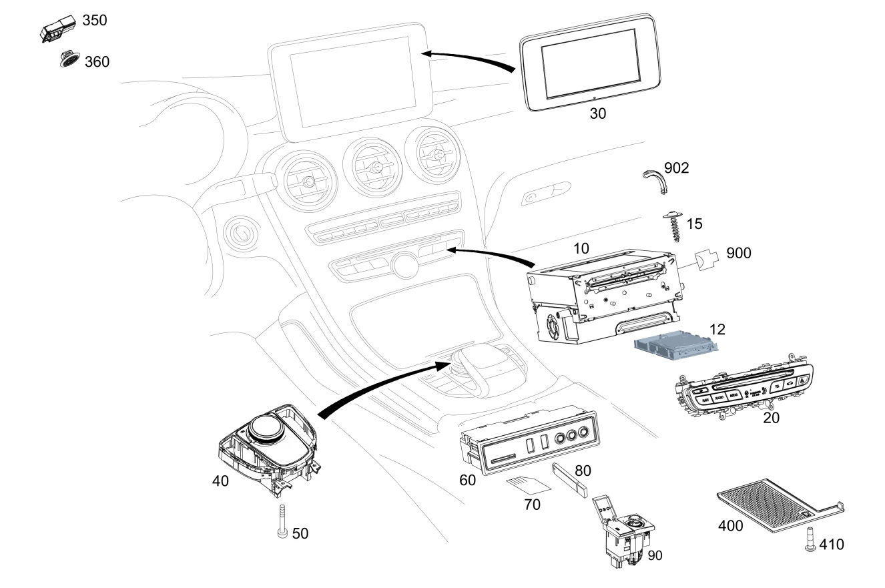

| № | Артикул | Название | Кол. | Примечание | Ограничение |
|---|---|---|---|---|---|
| 10 | A 205 900 09 33 | Блок управления (CONTROL UNIT) | 1 | Головное устройство [426] ДЛЯ ЦИФРОВОГО РУКОВОДСТВА ПО ЭКСПЛУАТАЦИИ ЗАКАЗАТЬ ТАКЖЕ ПРОГРАММНОЕ ОБЕСПЕЧЕНИЕ В КГ 58, TU300 [675] ПОСЛЕ МОНТАЖА ОБНОВИТЬ ПО И ЗАКОДИРОВАТЬ БУ. [697] ДЕТАЛЬ ПОСТАВЛЯЕТСЯ ТОЛЬКО/ИЛИ ТАКЖЕ КАК ЗАП.ЧАСТЬ | 520+(3U1/3U5)+(807+057/(808/809)+-154) |
| 10 | A 205 900 89 30 | Блок управления (CONTROL UNIT) | 1 | Головное устройство [426] ДЛЯ ЦИФРОВОГО РУКОВОДСТВА ПО ЭКСПЛУАТАЦИИ ЗАКАЗАТЬ ТАКЖЕ ПРОГРАММНОЕ ОБЕСПЕЧЕНИЕ В КГ 58, TU300 [672] ДЕТАЛЬ ПОСЛЕ УСТАН.ПРОВЕРИТЬ НА АКТУАЛЬНОСТЬ "ПРОШИВНОГО" ПО | 531+815+3U4+807+057 |
| 10 | A 205 900 10 33 | Блок управления (CONTROL UNIT) | 1 | Головное устройство [426] ДЛЯ ЦИФРОВОГО РУКОВОДСТВА ПО ЭКСПЛУАТАЦИИ ЗАКАЗАТЬ ТАКЖЕ ПРОГРАММНОЕ ОБЕСПЕЧЕНИЕ В КГ 58, TU300 [672] ДЕТАЛЬ ПОСЛЕ УСТАН.ПРОВЕРИТЬ НА АКТУАЛЬНОСТЬ "ПРОШИВНОГО" ПО [697] ДЕТАЛЬ ПОСТАВЛЯЕТСЯ ТОЛЬКО/ИЛИ ТАКЖЕ КАК ЗАП.ЧАСТЬ [003828] НА А/М С КОДОМ 522 В СОЧЕТАНИИ С КОДОМ 357 ДОПОЛНИТ. ЗАКАЗАТЬ КАРТУ ПАМЯТИ ДЛЯ НАВИГАЦ.СИСТЕМЫ, РАБОТАЮЩЕЙ С КАРТОЙ ПАМЯТИ SD | 522+818+(3U1/3U4/3U5)+(807+057/(808/809)+-154) |
| 10 | A 205 900 11 33 | Блок управления (CONTROL UNIT) | 1 | Головное устройство [426] ДЛЯ ЦИФРОВОГО РУКОВОДСТВА ПО ЭКСПЛУАТАЦИИ ЗАКАЗАТЬ ТАКЖЕ ПРОГРАММНОЕ ОБЕСПЕЧЕНИЕ В КГ 58, TU300 [672] ДЕТАЛЬ ПОСЛЕ УСТАН.ПРОВЕРИТЬ НА АКТУАЛЬНОСТЬ "ПРОШИВНОГО" ПО [697] ДЕТАЛЬ ПОСТАВЛЯЕТСЯ ТОЛЬКО/ИЛИ ТАКЖЕ КАК ЗАП.ЧАСТЬ [003828] НА А/М С КОДОМ 522 В СОЧЕТАНИИ С КОДОМ 357 ДОПОЛНИТ. ЗАКАЗАТЬ КАРТУ ПАМЯТИ ДЛЯ НАВИГАЦ.СИСТЕМЫ, РАБОТАЮЩЕЙ С КАРТОЙ ПАМЯТИ SD | 522+818+3U2+(807+057/(808/809)+-154) |
| 10 | A 205 900 65 34 | Блок управления (CONTROL UNIT) | 1 | Головное устройство [426] ДЛЯ ЦИФРОВОГО РУКОВОДСТВА ПО ЭКСПЛУАТАЦИИ ЗАКАЗАТЬ ТАКЖЕ ПРОГРАММНОЕ ОБЕСПЕЧЕНИЕ В КГ 58, TU300 [672] ДЕТАЛЬ ПОСЛЕ УСТАН.ПРОВЕРИТЬ НА АКТУАЛЬНОСТЬ "ПРОШИВНОГО" ПО [697] ДЕТАЛЬ ПОСТАВЛЯЕТСЯ ТОЛЬКО/ИЛИ ТАКЖЕ КАК ЗАП.ЧАСТЬ | (805/806)+531+814+3U1+-9O1 |
| 10 | A 205 900 66 34 | Блок управления (CONTROL UNIT) | 1 | Головное устройство [426] ДЛЯ ЦИФРОВОГО РУКОВОДСТВА ПО ЭКСПЛУАТАЦИИ ЗАКАЗАТЬ ТАКЖЕ ПРОГРАММНОЕ ОБЕСПЕЧЕНИЕ В КГ 58, TU300 [672] ДЕТАЛЬ ПОСЛЕ УСТАН.ПРОВЕРИТЬ НА АКТУАЛЬНОСТЬ "ПРОШИВНОГО" ПО [697] ДЕТАЛЬ ПОСТАВЛЯЕТСЯ ТОЛЬКО/ИЛИ ТАКЖЕ КАК ЗАП.ЧАСТЬ | (800/801/802/803)+531+815+3U2 |
| 10 | A 205 900 67 34 | Блок управления (CONTROL UNIT) | 1 | Головное устройство [426] ДЛЯ ЦИФРОВОГО РУКОВОДСТВА ПО ЭКСПЛУАТАЦИИ ЗАКАЗАТЬ ТАКЖЕ ПРОГРАММНОЕ ОБЕСПЕЧЕНИЕ В КГ 58, TU300 [672] ДЕТАЛЬ ПОСЛЕ УСТАН.ПРОВЕРИТЬ НА АКТУАЛЬНОСТЬ "ПРОШИВНОГО" ПО [697] ДЕТАЛЬ ПОСТАВЛЯЕТСЯ ТОЛЬКО/ИЛИ ТАКЖЕ КАК ЗАП.ЧАСТЬ | 531+815+3U3+806 |
| 10 | A 205 900 68 34 | Блок управления (CONTROL UNIT) | 1 | Головное устройство [426] ДЛЯ ЦИФРОВОГО РУКОВОДСТВА ПО ЭКСПЛУАТАЦИИ ЗАКАЗАТЬ ТАКЖЕ ПРОГРАММНОЕ ОБЕСПЕЧЕНИЕ В КГ 58, TU300 [672] ДЕТАЛЬ ПОСЛЕ УСТАН.ПРОВЕРИТЬ НА АКТУАЛЬНОСТЬ "ПРОШИВНОГО" ПО [697] ДЕТАЛЬ ПОСТАВЛЯЕТСЯ ТОЛЬКО/ИЛИ ТАКЖЕ КАК ЗАП.ЧАСТЬ | 531+814+3U4 |
| 10 | A 205 900 69 34 | Блок управления (CONTROL UNIT) | 1 | Головное устройство [426] ДЛЯ ЦИФРОВОГО РУКОВОДСТВА ПО ЭКСПЛУАТАЦИИ ЗАКАЗАТЬ ТАКЖЕ ПРОГРАММНОЕ ОБЕСПЕЧЕНИЕ В КГ 58, TU300 [672] ДЕТАЛЬ ПОСЛЕ УСТАН.ПРОВЕРИТЬ НА АКТУАЛЬНОСТЬ "ПРОШИВНОГО" ПО [697] ДЕТАЛЬ ПОСТАВЛЯЕТСЯ ТОЛЬКО/ИЛИ ТАКЖЕ КАК ЗАП.ЧАСТЬ | 531+815+3U5 |
| 10 | A 205 900 70 34 | Блок управления (CONTROL UNIT) | 1 | Головное устройство [426] ДЛЯ ЦИФРОВОГО РУКОВОДСТВА ПО ЭКСПЛУАТАЦИИ ЗАКАЗАТЬ ТАКЖЕ ПРОГРАММНОЕ ОБЕСПЕЧЕНИЕ В КГ 58, TU300 [672] ДЕТАЛЬ ПОСЛЕ УСТАН.ПРОВЕРИТЬ НА АКТУАЛЬНОСТЬ "ПРОШИВНОГО" ПО [697] ДЕТАЛЬ ПОСТАВЛЯЕТСЯ ТОЛЬКО/ИЛИ ТАКЖЕ КАК ЗАП.ЧАСТЬ | 531+814+3U5+806 |
| 10 | A 205 900 46 33 | Блок управления (CONTROL UNIT) | 1 | Головное устройство [426] ДЛЯ ЦИФРОВОГО РУКОВОДСТВА ПО ЭКСПЛУАТАЦИИ ЗАКАЗАТЬ ТАКЖЕ ПРОГРАММНОЕ ОБЕСПЕЧЕНИЕ В КГ 58, TU300 [672] ДЕТАЛЬ ПОСЛЕ УСТАН.ПРОВЕРИТЬ НА АКТУАЛЬНОСТЬ "ПРОШИВНОГО" ПО | (808/809)+520+(3U1/3U5)+154+M177 |
| 10 | A 205 900 91 37 | Блок управления (CONTROL UNIT) | 1 | Головное устройство [426] ДЛЯ ЦИФРОВОГО РУКОВОДСТВА ПО ЭКСПЛУАТАЦИИ ЗАКАЗАТЬ ТАКЖЕ ПРОГРАММНОЕ ОБЕСПЕЧЕНИЕ В КГ 58, TU300 [672] ДЕТАЛЬ ПОСЛЕ УСТАН.ПРОВЕРИТЬ НА АКТУАЛЬНОСТЬ "ПРОШИВНОГО" ПО | (808/809)+520+(3U1/3U5)+154+M177 |
| 10 | A 205 900 52 36 | Блок управления (CONTROL UNIT) | 1 | Головное устройство [426] ДЛЯ ЦИФРОВОГО РУКОВОДСТВА ПО ЭКСПЛУАТАЦИИ ЗАКАЗАТЬ ТАКЖЕ ПРОГРАММНОЕ ОБЕСПЕЧЕНИЕ В КГ 58, TU300 [672] ДЕТАЛЬ ПОСЛЕ УСТАН.ПРОВЕРИТЬ НА АКТУАЛЬНОСТЬ "ПРОШИВНОГО" ПО | (808/809)+520+(3U1/3U5)+154+M177 |
| 10 | A 205 900 42 40 | Блок управления (CONTROL UNIT) | 1 | Головное устройство [426] ДЛЯ ЦИФРОВОГО РУКОВОДСТВА ПО ЭКСПЛУАТАЦИИ ЗАКАЗАТЬ ТАКЖЕ ПРОГРАММНОЕ ОБЕСПЕЧЕНИЕ В КГ 58, TU300 [672] ДЕТАЛЬ ПОСЛЕ УСТАН.ПРОВЕРИТЬ НА АКТУАЛЬНОСТЬ "ПРОШИВНОГО" ПО | (808/809)+520+(3U1/3U5)+154+M177 |
| 10 | A 205 900 95 40 | Блок управления (CONTROL UNIT) | 1 | Головное устройство [426] ДЛЯ ЦИФРОВОГО РУКОВОДСТВА ПО ЭКСПЛУАТАЦИИ ЗАКАЗАТЬ ТАКЖЕ ПРОГРАММНОЕ ОБЕСПЕЧЕНИЕ В КГ 58, TU300 [672] ДЕТАЛЬ ПОСЛЕ УСТАН.ПРОВЕРИТЬ НА АКТУАЛЬНОСТЬ "ПРОШИВНОГО" ПО | (808/809)+520+(3U1/3U5)+154+M177 |
| 10 | A 205 900 47 33 | Блок управления (CONTROL UNIT) | 1 | Головное устройство [426] ДЛЯ ЦИФРОВОГО РУКОВОДСТВА ПО ЭКСПЛУАТАЦИИ ЗАКАЗАТЬ ТАКЖЕ ПРОГРАММНОЕ ОБЕСПЕЧЕНИЕ В КГ 58, TU300 [672] ДЕТАЛЬ ПОСЛЕ УСТАН.ПРОВЕРИТЬ НА АКТУАЛЬНОСТЬ "ПРОШИВНОГО" ПО [003828] НА А/М С КОДОМ 522 В СОЧЕТАНИИ С КОДОМ 357 ДОПОЛНИТ. ЗАКАЗАТЬ КАРТУ ПАМЯТИ ДЛЯ НАВИГАЦ.СИСТЕМЫ, РАБОТАЮЩЕЙ С КАРТОЙ ПАМЯТИ SD | (808/809)+522+818+(3U1/3U4/3U5)+154+M177 |
| 10 | A 205 900 92 37 | Блок управления (CONTROL UNIT) | 1 | Головное устройство [426] ДЛЯ ЦИФРОВОГО РУКОВОДСТВА ПО ЭКСПЛУАТАЦИИ ЗАКАЗАТЬ ТАКЖЕ ПРОГРАММНОЕ ОБЕСПЕЧЕНИЕ В КГ 58, TU300 [672] ДЕТАЛЬ ПОСЛЕ УСТАН.ПРОВЕРИТЬ НА АКТУАЛЬНОСТЬ "ПРОШИВНОГО" ПО [003828] НА А/М С КОДОМ 522 В СОЧЕТАНИИ С КОДОМ 357 ДОПОЛНИТ. ЗАКАЗАТЬ КАРТУ ПАМЯТИ ДЛЯ НАВИГАЦ.СИСТЕМЫ, РАБОТАЮЩЕЙ С КАРТОЙ ПАМЯТИ SD | (808/809)+522+818+(3U1/3U4/3U5)+154+M177 |
| 10 | A 205 900 53 36 | Блок управления (CONTROL UNIT) | 1 | Головное устройство [003828] НА А/М С КОДОМ 522 В СОЧЕТАНИИ С КОДОМ 357 ДОПОЛНИТ. ЗАКАЗАТЬ КАРТУ ПАМЯТИ ДЛЯ НАВИГАЦ.СИСТЕМЫ, РАБОТАЮЩЕЙ С КАРТОЙ ПАМЯТИ SD | (808/809)+522+818+(3U1/3U4/3U5)+154+M177 |
| 10 | A 205 900 43 40 | Блок управления (CONTROL UNIT) | 1 | Головное устройство [426] ДЛЯ ЦИФРОВОГО РУКОВОДСТВА ПО ЭКСПЛУАТАЦИИ ЗАКАЗАТЬ ТАКЖЕ ПРОГРАММНОЕ ОБЕСПЕЧЕНИЕ В КГ 58, TU300 [672] ДЕТАЛЬ ПОСЛЕ УСТАН.ПРОВЕРИТЬ НА АКТУАЛЬНОСТЬ "ПРОШИВНОГО" ПО [003828] НА А/М С КОДОМ 522 В СОЧЕТАНИИ С КОДОМ 357 ДОПОЛНИТ. ЗАКАЗАТЬ КАРТУ ПАМЯТИ ДЛЯ НАВИГАЦ.СИСТЕМЫ, РАБОТАЮЩЕЙ С КАРТОЙ ПАМЯТИ SD | (808/809)+522+818+(3U1/3U4/3U5)+154+M177 |
| 10 | A 205 900 96 40 | Блок управления (CONTROL UNIT) | 1 | Головное устройство [426] ДЛЯ ЦИФРОВОГО РУКОВОДСТВА ПО ЭКСПЛУАТАЦИИ ЗАКАЗАТЬ ТАКЖЕ ПРОГРАММНОЕ ОБЕСПЕЧЕНИЕ В КГ 58, TU300 [672] ДЕТАЛЬ ПОСЛЕ УСТАН.ПРОВЕРИТЬ НА АКТУАЛЬНОСТЬ "ПРОШИВНОГО" ПО [697] ДЕТАЛЬ ПОСТАВЛЯЕТСЯ ТОЛЬКО/ИЛИ ТАКЖЕ КАК ЗАП.ЧАСТЬ [003828] НА А/М С КОДОМ 522 В СОЧЕТАНИИ С КОДОМ 357 ДОПОЛНИТ. ЗАКАЗАТЬ КАРТУ ПАМЯТИ ДЛЯ НАВИГАЦ.СИСТЕМЫ, РАБОТАЮЩЕЙ С КАРТОЙ ПАМЯТИ SD | (808/809)+522+818+(3U1/3U4/3U5)+154+M177 |
| 10 | A 205 900 48 33 | Блок управления (CONTROL UNIT) | 1 | Головное устройство [426] ДЛЯ ЦИФРОВОГО РУКОВОДСТВА ПО ЭКСПЛУАТАЦИИ ЗАКАЗАТЬ ТАКЖЕ ПРОГРАММНОЕ ОБЕСПЕЧЕНИЕ В КГ 58, TU300 [672] ДЕТАЛЬ ПОСЛЕ УСТАН.ПРОВЕРИТЬ НА АКТУАЛЬНОСТЬ "ПРОШИВНОГО" ПО [003828] НА А/М С КОДОМ 522 В СОЧЕТАНИИ С КОДОМ 357 ДОПОЛНИТ. ЗАКАЗАТЬ КАРТУ ПАМЯТИ ДЛЯ НАВИГАЦ.СИСТЕМЫ, РАБОТАЮЩЕЙ С КАРТОЙ ПАМЯТИ SD | (808/809)+522+818+3U2+154+M177 |
| 10 | A 205 900 93 37 | Блок управления (CONTROL UNIT) | 1 | Головное устройство [426] ДЛЯ ЦИФРОВОГО РУКОВОДСТВА ПО ЭКСПЛУАТАЦИИ ЗАКАЗАТЬ ТАКЖЕ ПРОГРАММНОЕ ОБЕСПЕЧЕНИЕ В КГ 58, TU300 [672] ДЕТАЛЬ ПОСЛЕ УСТАН.ПРОВЕРИТЬ НА АКТУАЛЬНОСТЬ "ПРОШИВНОГО" ПО [003828] НА А/М С КОДОМ 522 В СОЧЕТАНИИ С КОДОМ 357 ДОПОЛНИТ. ЗАКАЗАТЬ КАРТУ ПАМЯТИ ДЛЯ НАВИГАЦ.СИСТЕМЫ, РАБОТАЮЩЕЙ С КАРТОЙ ПАМЯТИ SD | (808/809)+522+818+3U2+154+M177 |
| 10 | A 205 900 54 36 | Блок управления (CONTROL UNIT) | 1 | Головное устройство [426] ДЛЯ ЦИФРОВОГО РУКОВОДСТВА ПО ЭКСПЛУАТАЦИИ ЗАКАЗАТЬ ТАКЖЕ ПРОГРАММНОЕ ОБЕСПЕЧЕНИЕ В КГ 58, TU300 [672] ДЕТАЛЬ ПОСЛЕ УСТАН.ПРОВЕРИТЬ НА АКТУАЛЬНОСТЬ "ПРОШИВНОГО" ПО [697] ДЕТАЛЬ ПОСТАВЛЯЕТСЯ ТОЛЬКО/ИЛИ ТАКЖЕ КАК ЗАП.ЧАСТЬ [003828] НА А/М С КОДОМ 522 В СОЧЕТАНИИ С КОДОМ 357 ДОПОЛНИТ. ЗАКАЗАТЬ КАРТУ ПАМЯТИ ДЛЯ НАВИГАЦ.СИСТЕМЫ, РАБОТАЮЩЕЙ С КАРТОЙ ПАМЯТИ SD | (808/809)+522+818+3U2+154+M177 |
| 10 | A 205 900 44 40 | Блок управления (CONTROL UNIT) | 1 | Головное устройство [426] ДЛЯ ЦИФРОВОГО РУКОВОДСТВА ПО ЭКСПЛУАТАЦИИ ЗАКАЗАТЬ ТАКЖЕ ПРОГРАММНОЕ ОБЕСПЕЧЕНИЕ В КГ 58, TU300 [672] ДЕТАЛЬ ПОСЛЕ УСТАН.ПРОВЕРИТЬ НА АКТУАЛЬНОСТЬ "ПРОШИВНОГО" ПО [003828] НА А/М С КОДОМ 522 В СОЧЕТАНИИ С КОДОМ 357 ДОПОЛНИТ. ЗАКАЗАТЬ КАРТУ ПАМЯТИ ДЛЯ НАВИГАЦ.СИСТЕМЫ, РАБОТАЮЩЕЙ С КАРТОЙ ПАМЯТИ SD | (808/809)+522+818+3U2+154+M177 |
| 10 | A 205 900 97 40 | Блок управления (CONTROL UNIT) | 1 | Головное устройство [426] ДЛЯ ЦИФРОВОГО РУКОВОДСТВА ПО ЭКСПЛУАТАЦИИ ЗАКАЗАТЬ ТАКЖЕ ПРОГРАММНОЕ ОБЕСПЕЧЕНИЕ В КГ 58, TU300 [672] ДЕТАЛЬ ПОСЛЕ УСТАН.ПРОВЕРИТЬ НА АКТУАЛЬНОСТЬ "ПРОШИВНОГО" ПО [003828] НА А/М С КОДОМ 522 В СОЧЕТАНИИ С КОДОМ 357 ДОПОЛНИТ. ЗАКАЗАТЬ КАРТУ ПАМЯТИ ДЛЯ НАВИГАЦ.СИСТЕМЫ, РАБОТАЮЩЕЙ С КАРТОЙ ПАМЯТИ SD | (808/809)+522+818+3U2+154+M177 |
| 10 | A 205 900 34 44 | Блок управления (CONTROL UNIT) | 1 | Головное устройство [426] ДЛЯ ЦИФРОВОГО РУКОВОДСТВА ПО ЭКСПЛУАТАЦИИ ЗАКАЗАТЬ ТАКЖЕ ПРОГРАММНОЕ ОБЕСПЕЧЕНИЕ В КГ 58, TU300 [672] ДЕТАЛЬ ПОСЛЕ УСТАН.ПРОВЕРИТЬ НА АКТУАЛЬНОСТЬ "ПРОШИВНОГО" ПО [003828] НА А/М С КОДОМ 522 В СОЧЕТАНИИ С КОДОМ 357 ДОПОЛНИТ. ЗАКАЗАТЬ КАРТУ ПАМЯТИ ДЛЯ НАВИГАЦ.СИСТЕМЫ, РАБОТАЮЩЕЙ С КАРТОЙ ПАМЯТИ SD | (808/809)+522+818+3U2+154+M177 |
| 10 | A 205 900 78 34 | Блок управления (CONTROL UNIT) | 1 | Головное устройство [426] ДЛЯ ЦИФРОВОГО РУКОВОДСТВА ПО ЭКСПЛУАТАЦИИ ЗАКАЗАТЬ ТАКЖЕ ПРОГРАММНОЕ ОБЕСПЕЧЕНИЕ В КГ 58, TU300 [672] ДЕТАЛЬ ПОСЛЕ УСТАН.ПРОВЕРИТЬ НА АКТУАЛЬНОСТЬ "ПРОШИВНОГО" ПО | 531+815+3U1+(808/809/800/801/802/803)+-9O1 |
| 10 | A 205 900 42 36 | Блок управления (CONTROL UNIT) | 1 | Головное устройство [426] ДЛЯ ЦИФРОВОГО РУКОВОДСТВА ПО ЭКСПЛУАТАЦИИ ЗАКАЗАТЬ ТАКЖЕ ПРОГРАММНОЕ ОБЕСПЕЧЕНИЕ В КГ 58, TU300 [672] ДЕТАЛЬ ПОСЛЕ УСТАН.ПРОВЕРИТЬ НА АКТУАЛЬНОСТЬ "ПРОШИВНОГО" ПО [697] ДЕТАЛЬ ПОСТАВЛЯЕТСЯ ТОЛЬКО/ИЛИ ТАКЖЕ КАК ЗАП.ЧАСТЬ | 531+815+3U1+(808/809/800/801/802/803)+-9O1 |
| 10 | A 205 900 05 41 | Блок управления (CONTROL UNIT) | 1 | Головное устройство [426] ДЛЯ ЦИФРОВОГО РУКОВОДСТВА ПО ЭКСПЛУАТАЦИИ ЗАКАЗАТЬ ТАКЖЕ ПРОГРАММНОЕ ОБЕСПЕЧЕНИЕ В КГ 58, TU300 [675] ПОСЛЕ МОНТАЖА ОБНОВИТЬ ПО И ЗАКОДИРОВАТЬ БУ. [697] ДЕТАЛЬ ПОСТАВЛЯЕТСЯ ТОЛЬКО/ИЛИ ТАКЖЕ КАК ЗАП.ЧАСТЬ | 531+815+3U1+(808/809)+-9O1 |
| 10 | A 205 900 79 34 | Блок управления (CONTROL UNIT) | 1 | Головное устройство [426] ДЛЯ ЦИФРОВОГО РУКОВОДСТВА ПО ЭКСПЛУАТАЦИИ ЗАКАЗАТЬ ТАКЖЕ ПРОГРАММНОЕ ОБЕСПЕЧЕНИЕ В КГ 58, TU300 [672] ДЕТАЛЬ ПОСЛЕ УСТАН.ПРОВЕРИТЬ НА АКТУАЛЬНОСТЬ "ПРОШИВНОГО" ПО | 531+815+3U2+(808/809) |
| 10 | A 205 900 43 36 | Блок управления (CONTROL UNIT) | 1 | Головное устройство [426] ДЛЯ ЦИФРОВОГО РУКОВОДСТВА ПО ЭКСПЛУАТАЦИИ ЗАКАЗАТЬ ТАКЖЕ ПРОГРАММНОЕ ОБЕСПЕЧЕНИЕ В КГ 58, TU300 [672] ДЕТАЛЬ ПОСЛЕ УСТАН.ПРОВЕРИТЬ НА АКТУАЛЬНОСТЬ "ПРОШИВНОГО" ПО [697] ДЕТАЛЬ ПОСТАВЛЯЕТСЯ ТОЛЬКО/ИЛИ ТАКЖЕ КАК ЗАП.ЧАСТЬ | 531+815+3U2+(808/809) |
| 10 | A 205 900 06 41 | Блок управления (CONTROL UNIT) | 1 | Головное устройство; HU [426] ДЛЯ ЦИФРОВОГО РУКОВОДСТВА ПО ЭКСПЛУАТАЦИИ ЗАКАЗАТЬ ТАКЖЕ ПРОГРАММНОЕ ОБЕСПЕЧЕНИЕ В КГ 58, TU300 [675] ПОСЛЕ МОНТАЖА ОБНОВИТЬ ПО И ЗАКОДИРОВАТЬ БУ. [697] ДЕТАЛЬ ПОСТАВЛЯЕТСЯ ТОЛЬКО/ИЛИ ТАКЖЕ КАК ЗАП.ЧАСТЬ | 531+815+3U2+(808/809) |
| 10 | A 205 900 80 34 | Блок управления | 1 | Головное устройство [426] ДЛЯ ЦИФРОВОГО РУКОВОДСТВА ПО ЭКСПЛУАТАЦИИ ЗАКАЗАТЬ ТАКЖЕ ПРОГРАММНОЕ ОБЕСПЕЧЕНИЕ В КГ 58, TU300 [672] ДЕТАЛЬ ПОСЛЕ УСТАН.ПРОВЕРИТЬ НА АКТУАЛЬНОСТЬ "ПРОШИВНОГО" ПО | 531+815+3U3+(808/809/800/801/802/803) |
| 10 | A 205 900 02 36 | Блок управления (CONTROL UNIT) | 1 | Головное устройство [426] ДЛЯ ЦИФРОВОГО РУКОВОДСТВА ПО ЭКСПЛУАТАЦИИ ЗАКАЗАТЬ ТАКЖЕ ПРОГРАММНОЕ ОБЕСПЕЧЕНИЕ В КГ 58, TU300 [672] ДЕТАЛЬ ПОСЛЕ УСТАН.ПРОВЕРИТЬ НА АКТУАЛЬНОСТЬ "ПРОШИВНОГО" ПО | 531+815+3U3+(808/809/800/801/802/803) |
| 10 | A 205 900 44 36 | Блок управления (CONTROL UNIT) | 1 | Головное устройство [426] ДЛЯ ЦИФРОВОГО РУКОВОДСТВА ПО ЭКСПЛУАТАЦИИ ЗАКАЗАТЬ ТАКЖЕ ПРОГРАММНОЕ ОБЕСПЕЧЕНИЕ В КГ 58, TU300 [672] ДЕТАЛЬ ПОСЛЕ УСТАН.ПРОВЕРИТЬ НА АКТУАЛЬНОСТЬ "ПРОШИВНОГО" ПО [697] ДЕТАЛЬ ПОСТАВЛЯЕТСЯ ТОЛЬКО/ИЛИ ТАКЖЕ КАК ЗАП.ЧАСТЬ | 531+815+3U3+(808/809/800/801/802/803) |
| 10 | A 205 900 07 41 | Блок управления (CONTROL UNIT) | 1 | Головное устройство; HU [426] ДЛЯ ЦИФРОВОГО РУКОВОДСТВА ПО ЭКСПЛУАТАЦИИ ЗАКАЗАТЬ ТАКЖЕ ПРОГРАММНОЕ ОБЕСПЕЧЕНИЕ В КГ 58, TU300 [672] ДЕТАЛЬ ПОСЛЕ УСТАН.ПРОВЕРИТЬ НА АКТУАЛЬНОСТЬ "ПРОШИВНОГО" ПО [697] ДЕТАЛЬ ПОСТАВЛЯЕТСЯ ТОЛЬКО/ИЛИ ТАКЖЕ КАК ЗАП.ЧАСТЬ | 531+815+3U3+(808/809/800/801/802/803) |
| 10 | A 205 900 81 34 | Блок управления (CONTROL UNIT) | 1 | Головное устройство [426] ДЛЯ ЦИФРОВОГО РУКОВОДСТВА ПО ЭКСПЛУАТАЦИИ ЗАКАЗАТЬ ТАКЖЕ ПРОГРАММНОЕ ОБЕСПЕЧЕНИЕ В КГ 58, TU300 [672] ДЕТАЛЬ ПОСЛЕ УСТАН.ПРОВЕРИТЬ НА АКТУАЛЬНОСТЬ "ПРОШИВНОГО" ПО | 531+815+3U4+808 |
| 10 | A 205 900 03 36 | Блок управления (CONTROL UNIT) | 1 | Головное устройство [426] ДЛЯ ЦИФРОВОГО РУКОВОДСТВА ПО ЭКСПЛУАТАЦИИ ЗАКАЗАТЬ ТАКЖЕ ПРОГРАММНОЕ ОБЕСПЕЧЕНИЕ В КГ 58, TU300 [672] ДЕТАЛЬ ПОСЛЕ УСТАН.ПРОВЕРИТЬ НА АКТУАЛЬНОСТЬ "ПРОШИВНОГО" ПО | 531+815+3U4+808 |
| 10 | A 205 900 45 36 | Блок управления (CONTROL UNIT) | 1 | Головное устройство [426] ДЛЯ ЦИФРОВОГО РУКОВОДСТВА ПО ЭКСПЛУАТАЦИИ ЗАКАЗАТЬ ТАКЖЕ ПРОГРАММНОЕ ОБЕСПЕЧЕНИЕ В КГ 58, TU300 [672] ДЕТАЛЬ ПОСЛЕ УСТАН.ПРОВЕРИТЬ НА АКТУАЛЬНОСТЬ "ПРОШИВНОГО" ПО | 531+815+3U4+(808/809/800/801/802/803) |
| 10 | A 205 900 08 41 | Блок управления (CONTROL UNIT) | 1 | Головное устройство [426] ДЛЯ ЦИФРОВОГО РУКОВОДСТВА ПО ЭКСПЛУАТАЦИИ ЗАКАЗАТЬ ТАКЖЕ ПРОГРАММНОЕ ОБЕСПЕЧЕНИЕ В КГ 58, TU300 [672] ДЕТАЛЬ ПОСЛЕ УСТАН.ПРОВЕРИТЬ НА АКТУАЛЬНОСТЬ "ПРОШИВНОГО" ПО | 531+815+3U4+(808/809/800/801/802/803) |
| 10 | A 205 900 82 34 | Блок управления (CONTROL UNIT) | 1 | Головное устройство [426] ДЛЯ ЦИФРОВОГО РУКОВОДСТВА ПО ЭКСПЛУАТАЦИИ ЗАКАЗАТЬ ТАКЖЕ ПРОГРАММНОЕ ОБЕСПЕЧЕНИЕ В КГ 58, TU300 [672] ДЕТАЛЬ ПОСЛЕ УСТАН.ПРОВЕРИТЬ НА АКТУАЛЬНОСТЬ "ПРОШИВНОГО" ПО | 531+815+3U5+(808/809/800/801/802/803) |
| 10 | A 205 900 46 36 | Блок управления (CONTROL UNIT) | 1 | Головное устройство [426] ДЛЯ ЦИФРОВОГО РУКОВОДСТВА ПО ЭКСПЛУАТАЦИИ ЗАКАЗАТЬ ТАКЖЕ ПРОГРАММНОЕ ОБЕСПЕЧЕНИЕ В КГ 58, TU300 [672] ДЕТАЛЬ ПОСЛЕ УСТАН.ПРОВЕРИТЬ НА АКТУАЛЬНОСТЬ "ПРОШИВНОГО" ПО [697] ДЕТАЛЬ ПОСТАВЛЯЕТСЯ ТОЛЬКО/ИЛИ ТАКЖЕ КАК ЗАП.ЧАСТЬ | 531+815+3U5+(807/808/809/800/801/802/803) |
| 10 | A 205 900 09 41 | Блок управления (CONTROL UNIT) | 1 | Головное устройство; HU [426] ДЛЯ ЦИФРОВОГО РУКОВОДСТВА ПО ЭКСПЛУАТАЦИИ ЗАКАЗАТЬ ТАКЖЕ ПРОГРАММНОЕ ОБЕСПЕЧЕНИЕ В КГ 58, TU300 [675] ПОСЛЕ МОНТАЖА ОБНОВИТЬ ПО И ЗАКОДИРОВАТЬ БУ. [697] ДЕТАЛЬ ПОСТАВЛЯЕТСЯ ТОЛЬКО/ИЛИ ТАКЖЕ КАК ЗАП.ЧАСТЬ | 531+815+3U5+(807/808/809/800/801/802/803) |
| 10 | A 205 900 16 35 | Блок управления (CONTROL UNIT) | 1 | Головное устройство [426] ДЛЯ ЦИФРОВОГО РУКОВОДСТВА ПО ЭКСПЛУАТАЦИИ ЗАКАЗАТЬ ТАКЖЕ ПРОГРАММНОЕ ОБЕСПЕЧЕНИЕ В КГ 58, TU300 [672] ДЕТАЛЬ ПОСЛЕ УСТАН.ПРОВЕРИТЬ НА АКТУАЛЬНОСТЬ "ПРОШИВНОГО" ПО | 531+815+3U5+360+367 |
| 10 | A 205 900 10 41 | Блок управления (CONTROL UNIT) | 1 | Головное устройство; HU [426] ДЛЯ ЦИФРОВОГО РУКОВОДСТВА ПО ЭКСПЛУАТАЦИИ ЗАКАЗАТЬ ТАКЖЕ ПРОГРАММНОЕ ОБЕСПЕЧЕНИЕ В КГ 58, TU300 [672] ДЕТАЛЬ ПОСЛЕ УСТАН.ПРОВЕРИТЬ НА АКТУАЛЬНОСТЬ "ПРОШИВНОГО" ПО | 531+815+3U5+362+367 |
| 10 | A 253 900 50 06 | Блок управления (CONTROL UNIT) | 1 | Головное устройство; HU [672] ДЕТАЛЬ ПОСЛЕ УСТАН.ПРОВЕРИТЬ НА АКТУАЛЬНОСТЬ "ПРОШИВНОГО" ПО | 548+(3U6/3U8)+800 |
| 10 | A 253 900 50 06 | Блок управления (CONTROL UNIT) | 1 | Головное устройство; HU [672] ДЕТАЛЬ ПОСЛЕ УСТАН.ПРОВЕРИТЬ НА АКТУАЛЬНОСТЬ "ПРОШИВНОГО" ПО | 548+(3U6/3U8) |
| 10 | A 253 900 61 06 | Блок управления (CONTROL UNIT) | 1 | Головное устройство [672] ДЕТАЛЬ ПОСЛЕ УСТАН.ПРОВЕРИТЬ НА АКТУАЛЬНОСТЬ "ПРОШИВНОГО" ПО | 548+(3U6/3U8) |
| 10 | A 253 900 82 07 | Блок управления (CONTROL UNIT) | 1 | Головное устройство [672] ДЕТАЛЬ ПОСЛЕ УСТАН.ПРОВЕРИТЬ НА АКТУАЛЬНОСТЬ "ПРОШИВНОГО" ПО [697] ДЕТАЛЬ ПОСТАВЛЯЕТСЯ ТОЛЬКО/ИЛИ ТАКЖЕ КАК ЗАП.ЧАСТЬ | 548+(3U6/3U7/3U8)+800+-536 |
| 10 | A 253 900 51 06 | Блок управления (CONTROL UNIT) | 1 | Головное устройство; HU [672] ДЕТАЛЬ ПОСЛЕ УСТАН.ПРОВЕРИТЬ НА АКТУАЛЬНОСТЬ "ПРОШИВНОГО" ПО | 800+548+3U7 |
| 10 | A 253 900 62 06 | Блок управления (CONTROL UNIT) | 1 | Головное устройство [672] ДЕТАЛЬ ПОСЛЕ УСТАН.ПРОВЕРИТЬ НА АКТУАЛЬНОСТЬ "ПРОШИВНОГО" ПО | 800+548+3U7 |
| 10 | A 253 900 62 06 | Блок управления (CONTROL UNIT) | 1 | Головное устройство [672] ДЕТАЛЬ ПОСЛЕ УСТАН.ПРОВЕРИТЬ НА АКТУАЛЬНОСТЬ "ПРОШИВНОГО" ПО | 548+3U7+536 |
| 10 | A 253 900 52 06 | Блок управления (CONTROL UNIT) | 1 | Головное устройство; HU [672] ДЕТАЛЬ ПОСЛЕ УСТАН.ПРОВЕРИТЬ НА АКТУАЛЬНОСТЬ "ПРОШИВНОГО" ПО | 800+548+3U9 |
| 10 | A 253 900 63 06 | Блок управления (CONTROL UNIT) | 1 | Головное устройство [672] ДЕТАЛЬ ПОСЛЕ УСТАН.ПРОВЕРИТЬ НА АКТУАЛЬНОСТЬ "ПРОШИВНОГО" ПО [697] ДЕТАЛЬ ПОСТАВЛЯЕТСЯ ТОЛЬКО/ИЛИ ТАКЖЕ КАК ЗАП.ЧАСТЬ | 548+3U9+800 |
| 10 | A 253 900 53 06 | Блок управления (CONTROL UNIT) | 1 | Головное устройство; HU [672] ДЕТАЛЬ ПОСЛЕ УСТАН.ПРОВЕРИТЬ НА АКТУАЛЬНОСТЬ "ПРОШИВНОГО" ПО | 800+549+(3U6/3U8)+865 |
| 10 | A 253 900 64 06 | Блок управления (CONTROL UNIT) | 1 | Головное устройство [672] ДЕТАЛЬ ПОСЛЕ УСТАН.ПРОВЕРИТЬ НА АКТУАЛЬНОСТЬ "ПРОШИВНОГО" ПО [697] ДЕТАЛЬ ПОСТАВЛЯЕТСЯ ТОЛЬКО/ИЛИ ТАКЖЕ КАК ЗАП.ЧАСТЬ | 800+549+(3U6/3U8)+865 |
| 10 | A 253 900 54 06 | Блок управления (CONTROL UNIT) | 1 | Головное устройство; HU [672] ДЕТАЛЬ ПОСЛЕ УСТАН.ПРОВЕРИТЬ НА АКТУАЛЬНОСТЬ "ПРОШИВНОГО" ПО | 800+549+(3U6/3U8) |
| 10 | A 253 900 65 06 | Блок управления (CONTROL UNIT) | 1 | Головное устройство [672] ДЕТАЛЬ ПОСЛЕ УСТАН.ПРОВЕРИТЬ НА АКТУАЛЬНОСТЬ "ПРОШИВНОГО" ПО | 800+549+(3U6/3U8) |
| 10 | A 253 900 83 07 | Блок управления (CONTROL UNIT) | 1 | Головное устройство [672] ДЕТАЛЬ ПОСЛЕ УСТАН.ПРОВЕРИТЬ НА АКТУАЛЬНОСТЬ "ПРОШИВНОГО" ПО [697] ДЕТАЛЬ ПОСТАВЛЯЕТСЯ ТОЛЬКО/ИЛИ ТАКЖЕ КАК ЗАП.ЧАСТЬ | 549+(3U6/3U7/3U8) |
| 10 | A 253 900 55 06 | Блок управления (CONTROL UNIT) | 1 | Головное устройство; HU [672] ДЕТАЛЬ ПОСЛЕ УСТАН.ПРОВЕРИТЬ НА АКТУАЛЬНОСТЬ "ПРОШИВНОГО" ПО | 800+549+3U7 |
| 10 | A 253 900 66 06 | Блок управления (CONTROL UNIT) | 1 | Головное устройство [672] ДЕТАЛЬ ПОСЛЕ УСТАН.ПРОВЕРИТЬ НА АКТУАЛЬНОСТЬ "ПРОШИВНОГО" ПО | 800+549+3U7 |
| 10 | A 253 900 66 06 | Блок управления (CONTROL UNIT) | 1 | Головное устройство [672] ДЕТАЛЬ ПОСЛЕ УСТАН.ПРОВЕРИТЬ НА АКТУАЛЬНОСТЬ "ПРОШИВНОГО" ПО | 549+3U7+536 |
| 10 | A 253 900 58 06 | Блок управления (CONTROL UNIT) | 1 | Головное устройство; HU [672] ДЕТАЛЬ ПОСЛЕ УСТАН.ПРОВЕРИТЬ НА АКТУАЛЬНОСТЬ "ПРОШИВНОГО" ПО | 800+549+3U3 |
| 10 | A 253 900 68 06 | Блок управления (CONTROL UNIT) | 1 | Головное устройство [672] ДЕТАЛЬ ПОСЛЕ УСТАН.ПРОВЕРИТЬ НА АКТУАЛЬНОСТЬ "ПРОШИВНОГО" ПО | 800+549+3U3 |
| 10 | A 253 900 57 06 | Блок управления (CONTROL UNIT) | 1 | Головное устройство; HU [672] ДЕТАЛЬ ПОСЛЕ УСТАН.ПРОВЕРИТЬ НА АКТУАЛЬНОСТЬ "ПРОШИВНОГО" ПО | 800+549+3U9 |
| 10 | A 253 900 67 06 | Блок управления (CONTROL UNIT) | 1 | Головное устройство [672] ДЕТАЛЬ ПОСЛЕ УСТАН.ПРОВЕРИТЬ НА АКТУАЛЬНОСТЬ "ПРОШИВНОГО" ПО [697] ДЕТАЛЬ ПОСТАВЛЯЕТСЯ ТОЛЬКО/ИЛИ ТАКЖЕ КАК ЗАП.ЧАСТЬ | 549+3U9+800 |
| 10 | A 205 900 57 34 | Блок управления (CONTROL UNIT) | 1 | Головное устройство [426] ДЛЯ ЦИФРОВОГО РУКОВОДСТВА ПО ЭКСПЛУАТАЦИИ ЗАКАЗАТЬ ТАКЖЕ ПРОГРАММНОЕ ОБЕСПЕЧЕНИЕ В КГ 58, TU300 [672] ДЕТАЛЬ ПОСЛЕ УСТАН.ПРОВЕРИТЬ НА АКТУАЛЬНОСТЬ "ПРОШИВНОГО" ПО [697] ДЕТАЛЬ ПОСТАВЛЯЕТСЯ ТОЛЬКО/ИЛИ ТАКЖЕ КАК ЗАП.ЧАСТЬ | 531+814+3U1+-806 |
| 10 | A 205 900 63 34 | Блок управления (CONTROL UNIT) | 1 | Головное устройство [426] ДЛЯ ЦИФРОВОГО РУКОВОДСТВА ПО ЭКСПЛУАТАЦИИ ЗАКАЗАТЬ ТАКЖЕ ПРОГРАММНОЕ ОБЕСПЕЧЕНИЕ В КГ 58, TU300 [672] ДЕТАЛЬ ПОСЛЕ УСТАН.ПРОВЕРИТЬ НА АКТУАЛЬНОСТЬ "ПРОШИВНОГО" ПО [697] ДЕТАЛЬ ПОСТАВЛЯЕТСЯ ТОЛЬКО/ИЛИ ТАКЖЕ КАК ЗАП.ЧАСТЬ | 531+814+3U5 |
| 10 | A 205 900 61 34 | Блок управления (CONTROL UNIT) | 1 | Головное устройство [426] ДЛЯ ЦИФРОВОГО РУКОВОДСТВА ПО ЭКСПЛУАТАЦИИ ЗАКАЗАТЬ ТАКЖЕ ПРОГРАММНОЕ ОБЕСПЕЧЕНИЕ В КГ 58, TU300 [672] ДЕТАЛЬ ПОСЛЕ УСТАН.ПРОВЕРИТЬ НА АКТУАЛЬНОСТЬ "ПРОШИВНОГО" ПО | 531+814+3U4+(807/808/809/800/801/802/803) |
| 10 | A 253 900 01 08 | Блок управления (CONTROL UNIT) | 1 | Головное устройство [672] ДЕТАЛЬ ПОСЛЕ УСТАН.ПРОВЕРИТЬ НА АКТУАЛЬНОСТЬ "ПРОШИВНОГО" ПО | 548+(3U6/3U7/3U8)+(806/807/808/809/800/801/802)+-536 |
| 10 | A 253 900 30 08 | Блок управления (CONTROL UNIT) | 1 | Головное устройство [672] ДЕТАЛЬ ПОСЛЕ УСТАН.ПРОВЕРИТЬ НА АКТУАЛЬНОСТЬ "ПРОШИВНОГО" ПО [697] ДЕТАЛЬ ПОСТАВЛЯЕТСЯ ТОЛЬКО/ИЛИ ТАКЖЕ КАК ЗАП.ЧАСТЬ | 548+(3U6/3U7/3U8)+(806/807/808/809/800/801/802) |
| 10 | A 253 900 06 09 | Блок управления (CONTROL UNIT) | 1 | Головное устройство [672] ДЕТАЛЬ ПОСЛЕ УСТАН.ПРОВЕРИТЬ НА АКТУАЛЬНОСТЬ "ПРОШИВНОГО" ПО [697] ДЕТАЛЬ ПОСТАВЛЯЕТСЯ ТОЛЬКО/ИЛИ ТАКЖЕ КАК ЗАП.ЧАСТЬ | 548+(3U6/3U7/3U8)+(806/807/808/809/800/801/802) |
| 10 | A 253 900 57 09 | Блок управления (CONTROL UNIT) | 1 | Головное устройство [697] ДЕТАЛЬ ПОСТАВЛЯЕТСЯ ТОЛЬКО/ИЛИ ТАКЖЕ КАК ЗАП.ЧАСТЬ | 548+(3U6/3U8)+(806/807/808/809/800/801/802) |
| 10 | A 253 900 95 09 | Блок управления (CONTROL UNIT) | 1 | Головное устройство [672] ДЕТАЛЬ ПОСЛЕ УСТАН.ПРОВЕРИТЬ НА АКТУАЛЬНОСТЬ "ПРОШИВНОГО" ПО [697] ДЕТАЛЬ ПОСТАВЛЯЕТСЯ ТОЛЬКО/ИЛИ ТАКЖЕ КАК ЗАП.ЧАСТЬ | 548+(3U6+0S3)+(806/807/808/809/800/801/802) |
| 10 | A 253 900 06 09 | Блок управления (CONTROL UNIT) | 1 | Головное устройство [672] ДЕТАЛЬ ПОСЛЕ УСТАН.ПРОВЕРИТЬ НА АКТУАЛЬНОСТЬ "ПРОШИВНОГО" ПО [697] ДЕТАЛЬ ПОСТАВЛЯЕТСЯ ТОЛЬКО/ИЛИ ТАКЖЕ КАК ЗАП.ЧАСТЬ | 548+3U7+(806/807/808/809/800/801/802) |
| 10 | A 253 900 02 08 | Блок управления | 1 | Головное устройство [672] ДЕТАЛЬ ПОСЛЕ УСТАН.ПРОВЕРИТЬ НА АКТУАЛЬНОСТЬ "ПРОШИВНОГО" ПО | 548+810+(3U6/3U8)+(806/807/808/809/800/801/802) |
| 10 | A 253 900 31 08 | Блок управления (CONTROL UNIT) | 1 | Головное устройство [672] ДЕТАЛЬ ПОСЛЕ УСТАН.ПРОВЕРИТЬ НА АКТУАЛЬНОСТЬ "ПРОШИВНОГО" ПО [697] ДЕТАЛЬ ПОСТАВЛЯЕТСЯ ТОЛЬКО/ИЛИ ТАКЖЕ КАК ЗАП.ЧАСТЬ | 548+810+(3U6/3U8)+(806/807/808/809/800/801/802) |
| 10 | A 253 900 07 09 | Блок управления (CONTROL UNIT) | 1 | Головное устройство [672] ДЕТАЛЬ ПОСЛЕ УСТАН.ПРОВЕРИТЬ НА АКТУАЛЬНОСТЬ "ПРОШИВНОГО" ПО | 548+810+3U7+(806/807/808/809/800/801/802) |
| 10 | A 253 900 58 09 | Блок управления (CONTROL UNIT) | 1 | Головное устройство | 548+810+(3U6/3U8)+(806/807/808/809/800/801/802) |
| 10 | A 253 900 96 09 | Блок управления (CONTROL UNIT) | 1 | Головное устройство [672] ДЕТАЛЬ ПОСЛЕ УСТАН.ПРОВЕРИТЬ НА АКТУАЛЬНОСТЬ "ПРОШИВНОГО" ПО | 548+810+(3U6+0S3)+(806/807/808/809/800/801/802) |
| 10 | A 253 900 07 09 | Блок управления (CONTROL UNIT) | 1 | Головное устройство [672] ДЕТАЛЬ ПОСЛЕ УСТАН.ПРОВЕРИТЬ НА АКТУАЛЬНОСТЬ "ПРОШИВНОГО" ПО | 548+810+3U7+(806/807/808/809/800/801/802) |
| 10 | A 253 900 03 08 | Блок управления (CONTROL UNIT) | 1 | Головное устройство [672] ДЕТАЛЬ ПОСЛЕ УСТАН.ПРОВЕРИТЬ НА АКТУАЛЬНОСТЬ "ПРОШИВНОГО" ПО | 548+536+3U7+(806/807/808/809/800/801/802) |
| 10 | A 253 900 32 08 | Блок управления (CONTROL UNIT) | 1 | Головное устройство [672] ДЕТАЛЬ ПОСЛЕ УСТАН.ПРОВЕРИТЬ НА АКТУАЛЬНОСТЬ "ПРОШИВНОГО" ПО | 548+536+3U7+(806/807/808/809/800/801/802) |
| 10 | A 253 900 08 09 | Блок управления (CONTROL UNIT) | 1 | Головное устройство [672] ДЕТАЛЬ ПОСЛЕ УСТАН.ПРОВЕРИТЬ НА АКТУАЛЬНОСТЬ "ПРОШИВНОГО" ПО | 548+536+3U7+(806/807/808/809/800/801/802) |
| 10 | A 253 900 97 09 | Блок управления (CONTROL UNIT) | 1 | Головное устройство [672] ДЕТАЛЬ ПОСЛЕ УСТАН.ПРОВЕРИТЬ НА АКТУАЛЬНОСТЬ "ПРОШИВНОГО" ПО | 548+(3U7/3U7+536)+(460/494)+(806/807/808/809/800/801/802) |
| 10 | A 253 900 04 08 | Блок управления (CONTROL UNIT) | 1 | Головное устройство [672] ДЕТАЛЬ ПОСЛЕ УСТАН.ПРОВЕРИТЬ НА АКТУАЛЬНОСТЬ "ПРОШИВНОГО" ПО | 548+536+810+3U7+(806/807/808/809/800/801/802) |
| 10 | A 253 900 33 08 | Блок управления (CONTROL UNIT) | 1 | Головное устройство [672] ДЕТАЛЬ ПОСЛЕ УСТАН.ПРОВЕРИТЬ НА АКТУАЛЬНОСТЬ "ПРОШИВНОГО" ПО [697] ДЕТАЛЬ ПОСТАВЛЯЕТСЯ ТОЛЬКО/ИЛИ ТАКЖЕ КАК ЗАП.ЧАСТЬ | 548+536+810+3U7+(806/807/808/809/800/801/802) |
| 10 | A 253 900 09 09 | Блок управления (CONTROL UNIT) | 1 | Головное устройство [672] ДЕТАЛЬ ПОСЛЕ УСТАН.ПРОВЕРИТЬ НА АКТУАЛЬНОСТЬ "ПРОШИВНОГО" ПО [697] ДЕТАЛЬ ПОСТАВЛЯЕТСЯ ТОЛЬКО/ИЛИ ТАКЖЕ КАК ЗАП.ЧАСТЬ | 548+536+810+3U7+(806/807/808/809/800/801/802) |
| 10 | A 253 900 98 09 | Блок управления (CONTROL UNIT) | 1 | Головное устройство [672] ДЕТАЛЬ ПОСЛЕ УСТАН.ПРОВЕРИТЬ НА АКТУАЛЬНОСТЬ "ПРОШИВНОГО" ПО | 548+810+((3U7/3U7+536)+(460/494))+(806/807/808/809/800/801/802) |
| 10 | A 253 900 20 08 | Блок управления (CONTROL UNIT) | 1 | Головное устройство [672] ДЕТАЛЬ ПОСЛЕ УСТАН.ПРОВЕРИТЬ НА АКТУАЛЬНОСТЬ "ПРОШИВНОГО" ПО [697] ДЕТАЛЬ ПОСТАВЛЯЕТСЯ ТОЛЬКО/ИЛИ ТАКЖЕ КАК ЗАП.ЧАСТЬ | 548+3U9+(806/807/808/809/800/801/802) |
| 10 | A 253 900 34 08 | Блок управления (CONTROL UNIT) | 1 | Головное устройство [672] ДЕТАЛЬ ПОСЛЕ УСТАН.ПРОВЕРИТЬ НА АКТУАЛЬНОСТЬ "ПРОШИВНОГО" ПО [697] ДЕТАЛЬ ПОСТАВЛЯЕТСЯ ТОЛЬКО/ИЛИ ТАКЖЕ КАК ЗАП.ЧАСТЬ | 548+3U9+(806/807/808/809/800/801/802) |
| 10 | A 253 900 10 09 | Блок управления (CONTROL UNIT) | 1 | Головное устройство [672] ДЕТАЛЬ ПОСЛЕ УСТАН.ПРОВЕРИТЬ НА АКТУАЛЬНОСТЬ "ПРОШИВНОГО" ПО [697] ДЕТАЛЬ ПОСТАВЛЯЕТСЯ ТОЛЬКО/ИЛИ ТАКЖЕ КАК ЗАП.ЧАСТЬ | 548+3U9+(806/807/808/809/800/801/802) |
| 10 | A 253 900 61 09 | Блок управления (CONTROL UNIT) | 1 | Головное устройство [697] ДЕТАЛЬ ПОСТАВЛЯЕТСЯ ТОЛЬКО/ИЛИ ТАКЖЕ КАК ЗАП.ЧАСТЬ | 548+3U9+(806/807/808/809/800/801/802) |
| 10 | A 253 900 21 08 | Блок управления (CONTROL UNIT) | 1 | Головное устройство [672] ДЕТАЛЬ ПОСЛЕ УСТАН.ПРОВЕРИТЬ НА АКТУАЛЬНОСТЬ "ПРОШИВНОГО" ПО [697] ДЕТАЛЬ ПОСТАВЛЯЕТСЯ ТОЛЬКО/ИЛИ ТАКЖЕ КАК ЗАП.ЧАСТЬ | 548+810+3U9+(806/807/808/809/800/801/802) |
| 10 | A 253 900 35 08 | Блок управления (CONTROL UNIT) | 1 | Головное устройство [672] ДЕТАЛЬ ПОСЛЕ УСТАН.ПРОВЕРИТЬ НА АКТУАЛЬНОСТЬ "ПРОШИВНОГО" ПО [697] ДЕТАЛЬ ПОСТАВЛЯЕТСЯ ТОЛЬКО/ИЛИ ТАКЖЕ КАК ЗАП.ЧАСТЬ | 548+810+3U9+(806/807/808/809/800/801/802) |
| 10 | A 253 900 11 09 | Блок управления (CONTROL UNIT) | 1 | Головное устройство [672] ДЕТАЛЬ ПОСЛЕ УСТАН.ПРОВЕРИТЬ НА АКТУАЛЬНОСТЬ "ПРОШИВНОГО" ПО [697] ДЕТАЛЬ ПОСТАВЛЯЕТСЯ ТОЛЬКО/ИЛИ ТАКЖЕ КАК ЗАП.ЧАСТЬ | 548+810+3U9+(806/807/808/809/800/801/802) |
| 10 | A 253 900 62 09 | Блок управления (CONTROL UNIT) | 1 | Головное устройство [697] ДЕТАЛЬ ПОСТАВЛЯЕТСЯ ТОЛЬКО/ИЛИ ТАКЖЕ КАК ЗАП.ЧАСТЬ | 548+810+3U9+(806/807/808/809/800/801/802) |
| 10 | A 253 900 09 08 | Блок управления | 1 | Головное устройство [672] ДЕТАЛЬ ПОСЛЕ УСТАН.ПРОВЕРИТЬ НА АКТУАЛЬНОСТЬ "ПРОШИВНОГО" ПО | 549+(3U6/3U8)+865+(806/807/808/809/800/801/802) |
| 10 | A 253 900 38 08 | Блок управления | 1 | Головное устройство [672] ДЕТАЛЬ ПОСЛЕ УСТАН.ПРОВЕРИТЬ НА АКТУАЛЬНОСТЬ "ПРОШИВНОГО" ПО | 549+(3U6/3U8)+865+(806/807/808/809/800/801/802) |
| 10 | A 253 900 14 09 | Блок управления (CONTROL UNIT) | 1 | Головное устройство [672] ДЕТАЛЬ ПОСЛЕ УСТАН.ПРОВЕРИТЬ НА АКТУАЛЬНОСТЬ "ПРОШИВНОГО" ПО | 549+(3U6/3U8)+865+(806/807/808/809/800/801/802) |
| 10 | A 253 900 65 09 | Блок управления (CONTROL UNIT) | 1 | Головное устройство | 549+(3U6/3U8)+865+(806/807/808/809/800/801/802) |
| 10 | A 253 900 10 08 | Блок управления (CONTROL UNIT) | 1 | Головное устройство [672] ДЕТАЛЬ ПОСЛЕ УСТАН.ПРОВЕРИТЬ НА АКТУАЛЬНОСТЬ "ПРОШИВНОГО" ПО [697] ДЕТАЛЬ ПОСТАВЛЯЕТСЯ ТОЛЬКО/ИЛИ ТАКЖЕ КАК ЗАП.ЧАСТЬ | 549+(3U6/3U7/3U8)+(801/802) |
| 10 | A 253 900 10 08 | Блок управления (CONTROL UNIT) | 1 | Головное устройство [672] ДЕТАЛЬ ПОСЛЕ УСТАН.ПРОВЕРИТЬ НА АКТУАЛЬНОСТЬ "ПРОШИВНОГО" ПО [697] ДЕТАЛЬ ПОСТАВЛЯЕТСЯ ТОЛЬКО/ИЛИ ТАКЖЕ КАК ЗАП.ЧАСТЬ | 549+(3U6/3U7/3U8)+(806/807/808/809/800/801/802) |
| 10 | A 253 900 39 08 | Блок управления (CONTROL UNIT) | 1 | Головное устройство [672] ДЕТАЛЬ ПОСЛЕ УСТАН.ПРОВЕРИТЬ НА АКТУАЛЬНОСТЬ "ПРОШИВНОГО" ПО [697] ДЕТАЛЬ ПОСТАВЛЯЕТСЯ ТОЛЬКО/ИЛИ ТАКЖЕ КАК ЗАП.ЧАСТЬ | 549+(3U6/3U7/3U8)+(806/807/808/809/800/801/802) |
| 10 | A 253 900 15 09 | Блок управления (CONTROL UNIT) | 1 | Головное устройство [672] ДЕТАЛЬ ПОСЛЕ УСТАН.ПРОВЕРИТЬ НА АКТУАЛЬНОСТЬ "ПРОШИВНОГО" ПО [697] ДЕТАЛЬ ПОСТАВЛЯЕТСЯ ТОЛЬКО/ИЛИ ТАКЖЕ КАК ЗАП.ЧАСТЬ | 549+(3U6/3U7/3U8)+(806/807/808/809/800/801/802) |
| 10 | A 253 900 66 09 | Блок управления (CONTROL UNIT) | 1 | Головное устройство [672] ДЕТАЛЬ ПОСЛЕ УСТАН.ПРОВЕРИТЬ НА АКТУАЛЬНОСТЬ "ПРОШИВНОГО" ПО [697] ДЕТАЛЬ ПОСТАВЛЯЕТСЯ ТОЛЬКО/ИЛИ ТАКЖЕ КАК ЗАП.ЧАСТЬ | 549+(3U6/3U8)+(806/807/808/809/800/801/802) |
| 10 | A 253 900 10 10 | Блок управления (CONTROL UNIT) | 1 | Головное устройство [672] ДЕТАЛЬ ПОСЛЕ УСТАН.ПРОВЕРИТЬ НА АКТУАЛЬНОСТЬ "ПРОШИВНОГО" ПО | 549+3U6+0S3+(806/807/808/809/800/801/802) |
| 10 | A 253 900 15 09 | Блок управления (CONTROL UNIT) | 1 | Головное устройство [672] ДЕТАЛЬ ПОСЛЕ УСТАН.ПРОВЕРИТЬ НА АКТУАЛЬНОСТЬ "ПРОШИВНОГО" ПО [697] ДЕТАЛЬ ПОСТАВЛЯЕТСЯ ТОЛЬКО/ИЛИ ТАКЖЕ КАК ЗАП.ЧАСТЬ | 549+3U7+(806/807/808/809/800/801/802) |
| 10 | A 253 900 11 08 | Блок управления | 1 | Головное устройство [672] ДЕТАЛЬ ПОСЛЕ УСТАН.ПРОВЕРИТЬ НА АКТУАЛЬНОСТЬ "ПРОШИВНОГО" ПО | 549+536+3U7+(806/807/808/809/800/801/802) |
| 10 | A 253 900 40 08 | Блок управления (CONTROL UNIT) | 1 | Головное устройство [672] ДЕТАЛЬ ПОСЛЕ УСТАН.ПРОВЕРИТЬ НА АКТУАЛЬНОСТЬ "ПРОШИВНОГО" ПО [697] ДЕТАЛЬ ПОСТАВЛЯЕТСЯ ТОЛЬКО/ИЛИ ТАКЖЕ КАК ЗАП.ЧАСТЬ | 549+536+3U7+(806/807/808/809/800/801/802) |
| 10 | A 253 900 16 09 | Блок управления (CONTROL UNIT) | 1 | Головное устройство [672] ДЕТАЛЬ ПОСЛЕ УСТАН.ПРОВЕРИТЬ НА АКТУАЛЬНОСТЬ "ПРОШИВНОГО" ПО [697] ДЕТАЛЬ ПОСТАВЛЯЕТСЯ ТОЛЬКО/ИЛИ ТАКЖЕ КАК ЗАП.ЧАСТЬ | 549+536+3U7+(806/807/808/809/800/801/802) |
| 10 | A 253 900 11 10 | Блок управления (CONTROL UNIT) | 1 | Головное устройство [672] ДЕТАЛЬ ПОСЛЕ УСТАН.ПРОВЕРИТЬ НА АКТУАЛЬНОСТЬ "ПРОШИВНОГО" ПО | 549+(3U7/3U7+536)+(460/494)+(806/807/808/809/800/801/802) |
| 10 | A 253 900 14 08 | Блок управления (CONTROL UNIT) | 1 | Головное устройство [672] ДЕТАЛЬ ПОСЛЕ УСТАН.ПРОВЕРИТЬ НА АКТУАЛЬНОСТЬ "ПРОШИВНОГО" ПО | 549+3U3+(806/807/808/809/800/801/802) |
| 10 | A 253 900 43 08 | Блок управления (CONTROL UNIT) | 1 | Головное устройство [672] ДЕТАЛЬ ПОСЛЕ УСТАН.ПРОВЕРИТЬ НА АКТУАЛЬНОСТЬ "ПРОШИВНОГО" ПО [697] ДЕТАЛЬ ПОСТАВЛЯЕТСЯ ТОЛЬКО/ИЛИ ТАКЖЕ КАК ЗАП.ЧАСТЬ | 549+3U3+(806/807/808/809/800/801/802) |
| 10 | A 253 900 19 09 | Блок управления (CONTROL UNIT) | 1 | Головное устройство [672] ДЕТАЛЬ ПОСЛЕ УСТАН.ПРОВЕРИТЬ НА АКТУАЛЬНОСТЬ "ПРОШИВНОГО" ПО | 549+3U3+(806/807/808/809/800/801/802) |
| 10 | A 253 900 27 08 | Блок управления (CONTROL UNIT) | 1 | Головное устройство [672] ДЕТАЛЬ ПОСЛЕ УСТАН.ПРОВЕРИТЬ НА АКТУАЛЬНОСТЬ "ПРОШИВНОГО" ПО | 549+3U9+(806/807/808/809/800/801/802) |
| 10 | A 253 900 41 08 | Блок управления (CONTROL UNIT) | 1 | Головное устройство [672] ДЕТАЛЬ ПОСЛЕ УСТАН.ПРОВЕРИТЬ НА АКТУАЛЬНОСТЬ "ПРОШИВНОГО" ПО | 549+3U9+(806/807/808/809/800/801/802) |
| 10 | A 253 900 17 09 | Блок управления (CONTROL UNIT) | 1 | Головное устройство [672] ДЕТАЛЬ ПОСЛЕ УСТАН.ПРОВЕРИТЬ НА АКТУАЛЬНОСТЬ "ПРОШИВНОГО" ПО | 549+3U9+(806/807/808/809/800/801/802) |
| 10 | A 253 900 68 09 | Блок управления (CONTROL UNIT) | 1 | Головное устройство | 549+3U9+(806/807/808/809/800/801/802) |
| 10 | A 253 900 03 09 | Блок управления | 1 | Головное устройство [672] ДЕТАЛЬ ПОСЛЕ УСТАН.ПРОВЕРИТЬ НА АКТУАЛЬНОСТЬ "ПРОШИВНОГО" ПО | 548+0U5+(806/807/808/809/800/801/802) |
| 10 | A 253 900 23 09 | Блок управления | 1 | Головное устройство [672] ДЕТАЛЬ ПОСЛЕ УСТАН.ПРОВЕРИТЬ НА АКТУАЛЬНОСТЬ "ПРОШИВНОГО" ПО | 548+0U5+(806/807/808/809/800/801/802) |
| 10 | A 253 900 74 09 | Блок управления (CONTROL UNIT) | 1 | Головное устройство [672] ДЕТАЛЬ ПОСЛЕ УСТАН.ПРОВЕРИТЬ НА АКТУАЛЬНОСТЬ "ПРОШИВНОГО" ПО | 548+0U5+(806/807/808/809/800/801/802) |
| 10 | A 253 900 74 09 | Блок управления (CONTROL UNIT) | 1 | Головное устройство [672] ДЕТАЛЬ ПОСЛЕ УСТАН.ПРОВЕРИТЬ НА АКТУАЛЬНОСТЬ "ПРОШИВНОГО" ПО | 548+0U5+(806/807/808/809/800/801/802) |
| 10 | A 253 900 01 10 | Блок управления (CONTROL UNIT) | 1 | Головное устройство [672] ДЕТАЛЬ ПОСЛЕ УСТАН.ПРОВЕРИТЬ НА АКТУАЛЬНОСТЬ "ПРОШИВНОГО" ПО | 548+0U5+(806/807/808/809/800/801/802) |
| 10 | A 253 900 04 09 | Блок управления | 1 | Головное устройство [672] ДЕТАЛЬ ПОСЛЕ УСТАН.ПРОВЕРИТЬ НА АКТУАЛЬНОСТЬ "ПРОШИВНОГО" ПО | 548+810+0U5+(806/807/808/809/800/801/802) |
| 10 | A 253 900 24 09 | Блок управления | 1 | Головное устройство [672] ДЕТАЛЬ ПОСЛЕ УСТАН.ПРОВЕРИТЬ НА АКТУАЛЬНОСТЬ "ПРОШИВНОГО" ПО | 548+810+0U5+(806/807/808/809/800/801/802) |
| 10 | A 253 900 75 09 | Блок управления (CONTROL UNIT) | 1 | Головное устройство [672] ДЕТАЛЬ ПОСЛЕ УСТАН.ПРОВЕРИТЬ НА АКТУАЛЬНОСТЬ "ПРОШИВНОГО" ПО | 548+810+0U5+(806/807/808/809/800/801/802) |
| 10 | A 253 900 75 09 | Блок управления (CONTROL UNIT) | 1 | Головное устройство [672] ДЕТАЛЬ ПОСЛЕ УСТАН.ПРОВЕРИТЬ НА АКТУАЛЬНОСТЬ "ПРОШИВНОГО" ПО | 548+810+0U5+(806/807/808/809/800/801/802) |
| 10 | A 253 900 02 10 | Блок управления (CONTROL UNIT) | 1 | Головное устройство [672] ДЕТАЛЬ ПОСЛЕ УСТАН.ПРОВЕРИТЬ НА АКТУАЛЬНОСТЬ "ПРОШИВНОГО" ПО | 548+810+0U5+(806/807/808/809/800/801/802) |
| 10 | A 253 900 05 09 | Блок управления | 1 | Головное устройство [672] ДЕТАЛЬ ПОСЛЕ УСТАН.ПРОВЕРИТЬ НА АКТУАЛЬНОСТЬ "ПРОШИВНОГО" ПО | 549+0U5+(806/807/808/809/800/801/802) |
| 10 | A 253 900 25 09 | Блок управления | 1 | Головное устройство [672] ДЕТАЛЬ ПОСЛЕ УСТАН.ПРОВЕРИТЬ НА АКТУАЛЬНОСТЬ "ПРОШИВНОГО" ПО | 549+0U5+(806/807/808/809/800/801/802) |
| 10 | A 253 900 76 09 | Блок управления (CONTROL UNIT) | 1 | Головное устройство [672] ДЕТАЛЬ ПОСЛЕ УСТАН.ПРОВЕРИТЬ НА АКТУАЛЬНОСТЬ "ПРОШИВНОГО" ПО | 549+0U5+(806/807/808/809/800/801/802) |
| 10 | A 253 900 76 09 | Блок управления (CONTROL UNIT) | 1 | Головное устройство [672] ДЕТАЛЬ ПОСЛЕ УСТАН.ПРОВЕРИТЬ НА АКТУАЛЬНОСТЬ "ПРОШИВНОГО" ПО | 549+0U5+(806/807/808/809/800/801/802) |
| 10 | A 253 900 16 10 | Блок управления (CONTROL UNIT) | 1 | Головное устройство [672] ДЕТАЛЬ ПОСЛЕ УСТАН.ПРОВЕРИТЬ НА АКТУАЛЬНОСТЬ "ПРОШИВНОГО" ПО | 549+0U5+(806/807/808/809/800/801/802) |
| 10 | A 253 900 36 10 | Блок управления (CONTROL UNIT) | 1 | Головное устройство [672] ДЕТАЛЬ ПОСЛЕ УСТАН.ПРОВЕРИТЬ НА АКТУАЛЬНОСТЬ "ПРОШИВНОГО" ПО | 548+(3U6/3U7/3U8)+803 |
| 10 | A 253 900 66 10 | Блок управления (CONTROL UNIT) | 1 | Головное устройство [672] ДЕТАЛЬ ПОСЛЕ УСТАН.ПРОВЕРИТЬ НА АКТУАЛЬНОСТЬ "ПРОШИВНОГО" ПО | 548+(3U6/3U7/3U8) |
| 10 | A 253 900 19 10 | Блок управления | 1 | Головное устройство [672] ДЕТАЛЬ ПОСЛЕ УСТАН.ПРОВЕРИТЬ НА АКТУАЛЬНОСТЬ "ПРОШИВНОГО" ПО [697] ДЕТАЛЬ ПОСТАВЛЯЕТСЯ ТОЛЬКО/ИЛИ ТАКЖЕ КАК ЗАП.ЧАСТЬ | 548+(3U6+0S3/3U7+(460/494))+803 |
| 10 | A 253 900 76 10 | Блок управления (CONTROL UNIT) | 1 | Головное устройство [672] ДЕТАЛЬ ПОСЛЕ УСТАН.ПРОВЕРИТЬ НА АКТУАЛЬНОСТЬ "ПРОШИВНОГО" ПО [697] ДЕТАЛЬ ПОСТАВЛЯЕТСЯ ТОЛЬКО/ИЛИ ТАКЖЕ КАК ЗАП.ЧАСТЬ | 548+3U6+0S3/3U7+(460/494) |
| 10 | A 253 900 37 10 | Блок управления | 1 | Головное устройство [672] ДЕТАЛЬ ПОСЛЕ УСТАН.ПРОВЕРИТЬ НА АКТУАЛЬНОСТЬ "ПРОШИВНОГО" ПО | 548+810+(3U6/3U7/3U8)+803 |
| 10 | A 253 900 67 10 | Блок управления (CONTROL UNIT) | 1 | Головное устройство [672] ДЕТАЛЬ ПОСЛЕ УСТАН.ПРОВЕРИТЬ НА АКТУАЛЬНОСТЬ "ПРОШИВНОГО" ПО | 548+810+(3U6/3U7/3U8) |
| 10 | A 253 900 20 10 | Блок управления | 1 | Головное устройство [672] ДЕТАЛЬ ПОСЛЕ УСТАН.ПРОВЕРИТЬ НА АКТУАЛЬНОСТЬ "ПРОШИВНОГО" ПО | 548+810+((3U6+0S3)/3U7+(460/494))+803 |
| 10 | A 253 900 77 10 | Блок управления (CONTROL UNIT) | 1 | Головное устройство [672] ДЕТАЛЬ ПОСЛЕ УСТАН.ПРОВЕРИТЬ НА АКТУАЛЬНОСТЬ "ПРОШИВНОГО" ПО | 548+810+((3U6+0S3)/3U7+(460/494)) |
| 10 | A 253 900 38 10 | Блок управления | 1 | Головное устройство [672] ДЕТАЛЬ ПОСЛЕ УСТАН.ПРОВЕРИТЬ НА АКТУАЛЬНОСТЬ "ПРОШИВНОГО" ПО | 548+3U7+536+803 |
| 10 | A 253 900 68 10 | Блок управления (CONTROL UNIT) | 1 | Головное устройство [672] ДЕТАЛЬ ПОСЛЕ УСТАН.ПРОВЕРИТЬ НА АКТУАЛЬНОСТЬ "ПРОШИВНОГО" ПО | 548+3U7+536 |
| 10 | A 253 900 21 10 | Блок управления | 1 | Головное устройство [672] ДЕТАЛЬ ПОСЛЕ УСТАН.ПРОВЕРИТЬ НА АКТУАЛЬНОСТЬ "ПРОШИВНОГО" ПО | 548+3U7+536+(460/494)+803 |
| 10 | A 253 900 78 10 | Блок управления (CONTROL UNIT) | 1 | Головное устройство [672] ДЕТАЛЬ ПОСЛЕ УСТАН.ПРОВЕРИТЬ НА АКТУАЛЬНОСТЬ "ПРОШИВНОГО" ПО | 548+3U7+536+(460/494) |
| 10 | A 253 900 39 10 | Блок управления | 1 | Головное устройство [672] ДЕТАЛЬ ПОСЛЕ УСТАН.ПРОВЕРИТЬ НА АКТУАЛЬНОСТЬ "ПРОШИВНОГО" ПО | 548+810+3U7+536+803 |
| 10 | A 253 900 69 10 | Блок управления (CONTROL UNIT) | 1 | Головное устройство [672] ДЕТАЛЬ ПОСЛЕ УСТАН.ПРОВЕРИТЬ НА АКТУАЛЬНОСТЬ "ПРОШИВНОГО" ПО | 548+810+3U7+536 |
| 10 | A 253 900 22 10 | Блок управления (CONTROL UNIT) | 1 | Головное устройство [672] ДЕТАЛЬ ПОСЛЕ УСТАН.ПРОВЕРИТЬ НА АКТУАЛЬНОСТЬ "ПРОШИВНОГО" ПО | 548+810+3U7+536+(460/494)+803 |
| 10 | A 253 900 79 10 | Блок управления (CONTROL UNIT) | 1 | Головное устройство [672] ДЕТАЛЬ ПОСЛЕ УСТАН.ПРОВЕРИТЬ НА АКТУАЛЬНОСТЬ "ПРОШИВНОГО" ПО | 548+810+3U7+536+(460/494) |
| 10 | A 253 900 40 10 | Блок управления (CONTROL UNIT) | 1 | Головное устройство [672] ДЕТАЛЬ ПОСЛЕ УСТАН.ПРОВЕРИТЬ НА АКТУАЛЬНОСТЬ "ПРОШИВНОГО" ПО | 548+3U9+803 |
| 10 | A 253 900 70 10 | Блок управления (CONTROL UNIT) | 1 | Головное устройство [672] ДЕТАЛЬ ПОСЛЕ УСТАН.ПРОВЕРИТЬ НА АКТУАЛЬНОСТЬ "ПРОШИВНОГО" ПО | 548+3U9 |
| 10 | A 253 900 41 10 | Блок управления (CONTROL UNIT) | 1 | Головное устройство [672] ДЕТАЛЬ ПОСЛЕ УСТАН.ПРОВЕРИТЬ НА АКТУАЛЬНОСТЬ "ПРОШИВНОГО" ПО | 548+810+3U9+803 |
| 10 | A 253 900 71 10 | Блок управления (CONTROL UNIT) | 1 | Головное устройство [672] ДЕТАЛЬ ПОСЛЕ УСТАН.ПРОВЕРИТЬ НА АКТУАЛЬНОСТЬ "ПРОШИВНОГО" ПО | 548+810+3U9 |
| 10 | A 253 900 42 10 | Блок управления | 1 | Головное устройство [672] ДЕТАЛЬ ПОСЛЕ УСТАН.ПРОВЕРИТЬ НА АКТУАЛЬНОСТЬ "ПРОШИВНОГО" ПО | 549+(3U6/3U7/3U8)+803 |
| 10 | A 253 900 72 10 | Блок управления (CONTROL UNIT) | 1 | Головное устройство [672] ДЕТАЛЬ ПОСЛЕ УСТАН.ПРОВЕРИТЬ НА АКТУАЛЬНОСТЬ "ПРОШИВНОГО" ПО | 549+(3U6/3U7/3U8) |
| 10 | A 253 900 23 10 | Блок управления (CONTROL UNIT) | 1 | Головное устройство [672] ДЕТАЛЬ ПОСЛЕ УСТАН.ПРОВЕРИТЬ НА АКТУАЛЬНОСТЬ "ПРОШИВНОГО" ПО | 549+(3U6+0S3/3U7+(460/494))+803 |
| 10 | A 253 900 80 10 | Блок управления (CONTROL UNIT) | 1 | Головное устройство [672] ДЕТАЛЬ ПОСЛЕ УСТАН.ПРОВЕРИТЬ НА АКТУАЛЬНОСТЬ "ПРОШИВНОГО" ПО | 549+(3U6+0S3/3U7+(460/494)) |
| 10 | A 253 900 43 10 | Блок управления | 1 | Головное устройство [672] ДЕТАЛЬ ПОСЛЕ УСТАН.ПРОВЕРИТЬ НА АКТУАЛЬНОСТЬ "ПРОШИВНОГО" ПО | 549+3U7+536+803 |
| 10 | A 253 900 73 10 | Блок управления (CONTROL UNIT) | 1 | Головное устройство [672] ДЕТАЛЬ ПОСЛЕ УСТАН.ПРОВЕРИТЬ НА АКТУАЛЬНОСТЬ "ПРОШИВНОГО" ПО | 549+3U7+536 |
| 10 | A 253 900 24 10 | Блок управления | 1 | Головное устройство [672] ДЕТАЛЬ ПОСЛЕ УСТАН.ПРОВЕРИТЬ НА АКТУАЛЬНОСТЬ "ПРОШИВНОГО" ПО | 549+3U7+536+(460/494)+803 |
| 10 | A 253 900 81 10 | Блок управления (CONTROL UNIT) | 1 | Головное устройство [672] ДЕТАЛЬ ПОСЛЕ УСТАН.ПРОВЕРИТЬ НА АКТУАЛЬНОСТЬ "ПРОШИВНОГО" ПО | 549+3U7+536+(460/494) |
| 10 | A 253 900 44 10 | Блок управления | 1 | Головное устройство [672] ДЕТАЛЬ ПОСЛЕ УСТАН.ПРОВЕРИТЬ НА АКТУАЛЬНОСТЬ "ПРОШИВНОГО" ПО | 549+3U9+803 |
| 10 | A 253 900 74 10 | Блок управления (CONTROL UNIT) | 1 | Головное устройство [672] ДЕТАЛЬ ПОСЛЕ УСТАН.ПРОВЕРИТЬ НА АКТУАЛЬНОСТЬ "ПРОШИВНОГО" ПО | 549+3U9 |
| 10 | A 253 900 45 10 | Блок управления | 1 | Головное устройство [672] ДЕТАЛЬ ПОСЛЕ УСТАН.ПРОВЕРИТЬ НА АКТУАЛЬНОСТЬ "ПРОШИВНОГО" ПО | 549+3U3+803 |
| 10 | A 253 900 75 10 | Блок управления (CONTROL UNIT) | 1 | Головное устройство [672] ДЕТАЛЬ ПОСЛЕ УСТАН.ПРОВЕРИТЬ НА АКТУАЛЬНОСТЬ "ПРОШИВНОГО" ПО | 549+3U3 |
| 10 | A 253 900 95 08 | Блок управления (CONTROL UNIT) | 1 | Головное устройство [672] ДЕТАЛЬ ПОСЛЕ УСТАН.ПРОВЕРИТЬ НА АКТУАЛЬНОСТЬ "ПРОШИВНОГО" ПО | 548+0U5+803 |
| 10 | A 253 900 01 10 | Блок управления (CONTROL UNIT) | 1 | Головное устройство [672] ДЕТАЛЬ ПОСЛЕ УСТАН.ПРОВЕРИТЬ НА АКТУАЛЬНОСТЬ "ПРОШИВНОГО" ПО | 548+0U5 |
| 10 | A 253 900 01 10 | Блок управления (CONTROL UNIT) | 1 | Головное устройство [672] ДЕТАЛЬ ПОСЛЕ УСТАН.ПРОВЕРИТЬ НА АКТУАЛЬНОСТЬ "ПРОШИВНОГО" ПО | 548+0U5 |
| 10 | A 253 900 96 08 | Блок управления | 1 | Головное устройство [672] ДЕТАЛЬ ПОСЛЕ УСТАН.ПРОВЕРИТЬ НА АКТУАЛЬНОСТЬ "ПРОШИВНОГО" ПО | 548+810+0U5+803 |
| 10 | A 253 900 02 10 | Блок управления (CONTROL UNIT) | 1 | Головное устройство [672] ДЕТАЛЬ ПОСЛЕ УСТАН.ПРОВЕРИТЬ НА АКТУАЛЬНОСТЬ "ПРОШИВНОГО" ПО | 548+810+0U5 |
| 10 | A 253 900 02 10 | Блок управления (CONTROL UNIT) | 1 | Головное устройство [672] ДЕТАЛЬ ПОСЛЕ УСТАН.ПРОВЕРИТЬ НА АКТУАЛЬНОСТЬ "ПРОШИВНОГО" ПО | 548+810+0U5 |
| 10 | A 253 900 01 09 | Блок управления (CONTROL UNIT) | 1 | Головное устройство [672] ДЕТАЛЬ ПОСЛЕ УСТАН.ПРОВЕРИТЬ НА АКТУАЛЬНОСТЬ "ПРОШИВНОГО" ПО | 549+0U5+803 |
| 10 | A 253 900 16 10 | Блок управления (CONTROL UNIT) | 1 | Головное устройство [672] ДЕТАЛЬ ПОСЛЕ УСТАН.ПРОВЕРИТЬ НА АКТУАЛЬНОСТЬ "ПРОШИВНОГО" ПО | 549+0U5 |
| 10 | A 253 900 16 10 | Блок управления (CONTROL UNIT) | 1 | Головное устройство [672] ДЕТАЛЬ ПОСЛЕ УСТАН.ПРОВЕРИТЬ НА АКТУАЛЬНОСТЬ "ПРОШИВНОГО" ПО | 549+0U5 |
| 10 | A 253 900 91 08 | Блок управления (CONTROL UNIT) | 1 | Головное устройство [672] ДЕТАЛЬ ПОСЛЕ УСТАН.ПРОВЕРИТЬ НА АКТУАЛЬНОСТЬ "ПРОШИВНОГО" ПО | 548+3U7 |
| 10 | A 253 900 92 08 | Блок управления (CONTROL UNIT) | 1 | Головное устройство [672] ДЕТАЛЬ ПОСЛЕ УСТАН.ПРОВЕРИТЬ НА АКТУАЛЬНОСТЬ "ПРОШИВНОГО" ПО [697] ДЕТАЛЬ ПОСТАВЛЯЕТСЯ ТОЛЬКО/ИЛИ ТАКЖЕ КАК ЗАП.ЧАСТЬ | 548+810+3U7 |
| 10 | A 253 900 93 08 | Блок управления (CONTROL UNIT) | 1 | Головное устройство [672] ДЕТАЛЬ ПОСЛЕ УСТАН.ПРОВЕРИТЬ НА АКТУАЛЬНОСТЬ "ПРОШИВНОГО" ПО | 548+3U9 |
| 10 | A 253 900 94 08 | Блок управления (CONTROL UNIT) | 1 | Головное устройство [672] ДЕТАЛЬ ПОСЛЕ УСТАН.ПРОВЕРИТЬ НА АКТУАЛЬНОСТЬ "ПРОШИВНОГО" ПО | 548+810+3U9 |
| 10 | A 253 900 98 08 | Блок управления (CONTROL UNIT) | 1 | Головное устройство [672] ДЕТАЛЬ ПОСЛЕ УСТАН.ПРОВЕРИТЬ НА АКТУАЛЬНОСТЬ "ПРОШИВНОГО" ПО | 549+(3U6/3U8)+-0S3 |
| 10 | A 253 900 99 08 | Блок управления (CONTROL UNIT) | 1 | Головное устройство [672] ДЕТАЛЬ ПОСЛЕ УСТАН.ПРОВЕРИТЬ НА АКТУАЛЬНОСТЬ "ПРОШИВНОГО" ПО | 549+3U7 |
| 10 | A 253 900 02 09 | Блок управления (CONTROL UNIT) | 1 | Головное устройство [672] ДЕТАЛЬ ПОСЛЕ УСТАН.ПРОВЕРИТЬ НА АКТУАЛЬНОСТЬ "ПРОШИВНОГО" ПО | 549+3U3 |
| 10 | A 205 900 05 41 | Блок управления (CONTROL UNIT) | 1 | Головное устройство [426] ДЛЯ ЦИФРОВОГО РУКОВОДСТВА ПО ЭКСПЛУАТАЦИИ ЗАКАЗАТЬ ТАКЖЕ ПРОГРАММНОЕ ОБЕСПЕЧЕНИЕ В КГ 58, TU300 [675] ПОСЛЕ МОНТАЖА ОБНОВИТЬ ПО И ЗАКОДИРОВАТЬ БУ. [697] ДЕТАЛЬ ПОСТАВЛЯЕТСЯ ТОЛЬКО/ИЛИ ТАКЖЕ КАК ЗАП.ЧАСТЬ | 531+815+3U1 |
| 10 | A 205 900 06 52 | Блок управления (CONTROL UNIT) | 1 | Головное устройство [672] ДЕТАЛЬ ПОСЛЕ УСТАН.ПРОВЕРИТЬ НА АКТУАЛЬНОСТЬ "ПРОШИВНОГО" ПО | 531+815+3U5+362+367 |
| 10 | A 253 900 16 10 | Блок управления (CONTROL UNIT) | 1 | Головное устройство [672] ДЕТАЛЬ ПОСЛЕ УСТАН.ПРОВЕРИТЬ НА АКТУАЛЬНОСТЬ "ПРОШИВНОГО" ПО | 549+0U5 |
| 10 | A 253 900 02 10 | Блок управления (CONTROL UNIT) | 1 | Головное устройство [672] ДЕТАЛЬ ПОСЛЕ УСТАН.ПРОВЕРИТЬ НА АКТУАЛЬНОСТЬ "ПРОШИВНОГО" ПО | 548+810+0U5 |
| 12 | A 000 906 26 11 | - Жесткий диск (HARD DISK) | 1 | [697] ДЕТАЛЬ ПОСТАВЛЯЕТСЯ ТОЛЬКО/ИЛИ ТАКЖЕ КАК ЗАП.ЧАСТЬ | 548+3U9 |
| 12 | A 000 906 26 11 | - Жесткий диск (HARD DISK) | 1 | [697] ДЕТАЛЬ ПОСТАВЛЯЕТСЯ ТОЛЬКО/ИЛИ ТАКЖЕ КАК ЗАП.ЧАСТЬ | 548+(3U9/0U5) |
| 12 | A 000 906 27 11 | - Жесткий диск (HARD DISK) | 1 | [697] ДЕТАЛЬ ПОСТАВЛЯЕТСЯ ТОЛЬКО/ИЛИ ТАКЖЕ КАК ЗАП.ЧАСТЬ | 548+(3U6/3U7/3U8)+-802 |
| 12 | A 000 906 28 11 | - Жесткий диск (HARD DISK) | 1 | [697] ДЕТАЛЬ ПОСТАВЛЯЕТСЯ ТОЛЬКО/ИЛИ ТАКЖЕ КАК ЗАП.ЧАСТЬ | 549+3U9 |
| 12 | A 000 906 28 11 | - Жесткий диск (HARD DISK) | 1 | [697] ДЕТАЛЬ ПОСТАВЛЯЕТСЯ ТОЛЬКО/ИЛИ ТАКЖЕ КАК ЗАП.ЧАСТЬ | 549+(3U9/0U5) |
| 12 | A 000 906 29 11 | - Жесткий диск (HARD DISK) | 1 | [697] ДЕТАЛЬ ПОСТАВЛЯЕТСЯ ТОЛЬКО/ИЛИ ТАКЖЕ КАК ЗАП.ЧАСТЬ | 549+(3U6/3U7/3U8) |
| 12 | A 000 906 30 11 | - Жесткий диск (HARD DISK) | 1 | [697] ДЕТАЛЬ ПОСТАВЛЯЕТСЯ ТОЛЬКО/ИЛИ ТАКЖЕ КАК ЗАП.ЧАСТЬ | 549+3U3 |
| 15 | A 006 990 43 12 | Винт со полукругл.головой (PAN HEAD SCREW W COLLAR) | 2 | Крепление головного устройства; 5X20 | 548/549 |
| 15 | A 000 990 70 06 | Винт со полукругл.головой (PAN HEAD SCREW W COLLAR) | 2 | Крепление головного устройства; 5X20 | 548/549 |
| 20 | Q 0000000001 | ВАЖНАЯ ИНФОРМАЦИЯ | 1 | Детали см.: 82/062 | |
| 30 | A 205 900 41 13 | Блок управления (CONTROL UNIT) | 1 | Центральный дисплей; ZDP [672] ДЕТАЛЬ ПОСЛЕ УСТАН.ПРОВЕРИТЬ НА АКТУАЛЬНОСТЬ "ПРОШИВНОГО" ПО [697] ДЕТАЛЬ ПОСТАВЛЯЕТСЯ ТОЛЬКО/ИЛИ ТАКЖЕ КАК ЗАП.ЧАСТЬ | 806/807/808/809+-9O1 |
| 30 | A 205 900 22 11 | Блок управления (CONTROL UNIT) | 1 | Центральный дисплей [672] ДЕТАЛЬ ПОСЛЕ УСТАН.ПРОВЕРИТЬ НА АКТУАЛЬНОСТЬ "ПРОШИВНОГО" ПО [697] ДЕТАЛЬ ПОСТАВЛЯЕТСЯ ТОЛЬКО/ИЛИ ТАКЖЕ КАК ЗАП.ЧАСТЬ | (806/807/808/809)+531+-9O1 |
| 30 | A 253 900 15 05 | Блок управления (CONTROL UNIT) | 1 | Центральный дисплей [672] ДЕТАЛЬ ПОСЛЕ УСТАН.ПРОВЕРИТЬ НА АКТУАЛЬНОСТЬ "ПРОШИВНОГО" ПО | (548/549)+-(806/807/808/809)+-9O1 |
| 30 | A 253 900 69 05 | Блок управления (CONTROL UNIT) | 1 | Центральный дисплей [672] ДЕТАЛЬ ПОСЛЕ УСТАН.ПРОВЕРИТЬ НА АКТУАЛЬНОСТЬ "ПРОШИВНОГО" ПО [697] ДЕТАЛЬ ПОСТАВЛЯЕТСЯ ТОЛЬКО/ИЛИ ТАКЖЕ КАК ЗАП.ЧАСТЬ | (548/549)+859+-(806/807/808/809) |
| 30 | A 253 900 69 05 | Блок управления (CONTROL UNIT) | 1 | Центральный дисплей [672] ДЕТАЛЬ ПОСЛЕ УСТАН.ПРОВЕРИТЬ НА АКТУАЛЬНОСТЬ "ПРОШИВНОГО" ПО [697] ДЕТАЛЬ ПОСТАВЛЯЕТСЯ ТОЛЬКО/ИЛИ ТАКЖЕ КАК ЗАП.ЧАСТЬ | (548/549)+859+-(806/807/808/809) |
| 30 | A 253 900 38 09 | Блок управления (CONTROL UNIT) | 1 | Центральный дисплей [672] ДЕТАЛЬ ПОСЛЕ УСТАН.ПРОВЕРИТЬ НА АКТУАЛЬНОСТЬ "ПРОШИВНОГО" ПО | (548/549)+859+-(806/807/808/809) |
| 30 | A 253 900 50 09 | Блок управления (CONTROL UNIT) | 1 | Центральный дисплей [672] ДЕТАЛЬ ПОСЛЕ УСТАН.ПРОВЕРИТЬ НА АКТУАЛЬНОСТЬ "ПРОШИВНОГО" ПО | (548/549)+859+803 |
| 30 | A 253 900 50 09 | Блок управления (CONTROL UNIT) | 1 | Центральный дисплей [672] ДЕТАЛЬ ПОСЛЕ УСТАН.ПРОВЕРИТЬ НА АКТУАЛЬНОСТЬ "ПРОШИВНОГО" ПО | (548/549)+859+-(806/807/808/809) |
| 40 | Q 0000000001 | ВАЖНАЯ ИНФОРМАЦИЯ | 1 | Детали см.: 82/062 | |
| 50 | Q 0000000001 | ВАЖНАЯ ИНФОРМАЦИЯ | 1 | Детали см.: 82/062 | |
| 60 | A 205 820 03 26 | CONNECTION UNIT (MULTIMEDIA CON. UNIT) | 1 | Модуль подключения мультимедийных устройств [697] ДЕТАЛЬ ПОСТАВЛЯЕТСЯ ТОЛЬКО/ИЛИ ТАКЖЕ КАК ЗАП.ЧАСТЬ | (806/807/808)+-154 |
| 60 | A 205 820 02 26 | CONNECTION UNIT (MULTIMEDIA CON. UNIT) | 1 | Модуль подключения мультимедийных устройств [697] ДЕТАЛЬ ПОСТАВЛЯЕТСЯ ТОЛЬКО/ИЛИ ТАКЖЕ КАК ЗАП.ЧАСТЬ | (355/357/531)+(806/807/808)+-154 |
| 60 | A 205 820 05 26 | CONNECTION UNIT (MULTIMEDIA CON. UNIT) | 1 | Модуль подключения мультимедийных устройств [697] ДЕТАЛЬ ПОСТАВЛЯЕТСЯ ТОЛЬКО/ИЛИ ТАКЖЕ КАК ЗАП.ЧАСТЬ | ((355/357)+(B54/367))+(806/807/808)+-154 |
| 60 | A 253 820 88 00 | CONNECTION UNIT (MULTIMEDIA CON. UNIT) | 1 | Модуль подключения мультимедийных устройств | 154+(808/809)+-9O1 |
| 60 | A 205 820 02 26 | CONNECTION UNIT (MULTIMEDIA CON. UNIT) | 1 | Модуль подключения мультимедийных устройств [697] ДЕТАЛЬ ПОСТАВЛЯЕТСЯ ТОЛЬКО/ИЛИ ТАКЖЕ КАК ЗАП.ЧАСТЬ | 531+(154+808/809)+-9O1 |
| 60 | A 253 820 61 00 | CONNECTION UNIT (MULTIMEDIA CON. UNIT) | 1 | Модуль подключения мультимедийных устройств [697] ДЕТАЛЬ ПОСТАВЛЯЕТСЯ ТОЛЬКО/ИЛИ ТАКЖЕ КАК ЗАП.ЧАСТЬ | (355/357)+(154+808/809)+-9O1 |
| 60 | A 167 820 13 02 | CONNECTION UNIT (MULTIMEDIA CON. UNIT) | 1 | Модуль подключения мультимедийных устройств [697] ДЕТАЛЬ ПОСТАВЛЯЕТСЯ ТОЛЬКО/ИЛИ ТАКЖЕ КАК ЗАП.ЧАСТЬ | (548/549)+(800/801/802/803) |
| 60 | A 247 820 40 02 | CONNECTION UNIT (MULTIMEDIA CON. UNIT) | 1 | Модуль подключения мультимедийных устройств [697] ДЕТАЛЬ ПОСТАВЛЯЕТСЯ ТОЛЬКО/ИЛИ ТАКЖЕ КАК ЗАП.ЧАСТЬ | (548/549)+(897/899)+(800/801/802/803) |
| 70 | A 213 906 02 04 | Карта памяти (MEMORY CARD) | 1 | Навигационная система [697] ДЕТАЛЬ ПОСТАВЛЯЕТСЯ ТОЛЬКО/ИЛИ ТАКЖЕ КАК ЗАП.ЧАСТЬ | 357+522+7XXL+(806/807/(808/809)+-154) |
| 70 | A 213 906 27 04 | Карта памяти (MEMORY CARD) | 1 | Навигационная система [697] ДЕТАЛЬ ПОСТАВЛЯЕТСЯ ТОЛЬКО/ИЛИ ТАКЖЕ КАК ЗАП.ЧАСТЬ | 357+522+7XXL+(701L/705L/737L/724L/749L)+(806/807/(808/809)+-154) |
| 70 | A 213 906 01 04 | Карта памяти (MEMORY CARD) | 1 | Навигационная система [697] ДЕТАЛЬ ПОСТАВЛЯЕТСЯ ТОЛЬКО/ИЛИ ТАКЖЕ КАК ЗАП.ЧАСТЬ | 357+522+9XXL+(806/807/(808/809)+-154) |
| 70 | A 213 906 04 04 | Карта памяти (MEMORY CARD) | 1 | Навигационная система [697] ДЕТАЛЬ ПОСТАВЛЯЕТСЯ ТОЛЬКО/ИЛИ ТАКЖЕ КАК ЗАП.ЧАСТЬ | 357+522+817L+(806/807/(808/809)+-154) |
| 70 | A 213 906 63 04 | Карта памяти (MEMORY CARD) | 1 | Навигационная система [697] ДЕТАЛЬ ПОСТАВЛЯЕТСЯ ТОЛЬКО/ИЛИ ТАКЖЕ КАК ЗАП.ЧАСТЬ | 357+522+825L+(806/807/(808/809)+-154) |
| 70 | A 213 906 03 04 | Карта памяти | 1 | Навигационная система | 357+522+(819L/823L/824L)+(806/807/(808/809)+-154) |
| 70 | A 213 906 56 04 | Карта памяти (MEMORY CARD) | 1 | Навигационная система [697] ДЕТАЛЬ ПОСТАВЛЯЕТСЯ ТОЛЬКО/ИЛИ ТАКЖЕ КАК ЗАП.ЧАСТЬ | 357+522+(2XXL/5XXL/808L/810L/812L/814L/816L/818L/820L/821L/837L/863L)+(806/807/(808/809)+-154) |
| 70 | A 213 906 43 05 | Карта памяти (MEMORY CARD) | 1 | Навигационная система | 355+522+7XXL |
| 70 | A 213 906 37 05 | Карта памяти (MEMORY CARD) | 1 | Навигационная система | 355+522+7XXL+(701L/705L/737L/724L/749L) |
| 70 | A 213 906 42 05 | Карта памяти (MEMORY CARD) | 1 | Навигационная система | 355+522+9XXL |
| 70 | A 213 906 44 05 | Карта памяти (MEMORY CARD) | 1 | Навигационная система | 355+522+817L |
| 70 | A 213 906 46 05 | Карта памяти (MEMORY CARD) | 1 | Навигационная система | 355+522+825L |
| 70 | A 213 906 38 05 | Карта памяти (MEMORY CARD) | 1 | Навигационная система | 355+522+(6XXL/623/803L/833L/835L/853L/867L) |
| 70 | A 213 906 45 05 | Карта памяти (MEMORY CARD) | 1 | Навигационная система | 355+522+(811L/813L/815L/831L/845L/851L/855L/857L/865L/868L/869L/875L/879L/882L/9XXL+915L) |
| 70 | A 213 906 00 04 | Карта памяти (MEMORY CARD) | 1 | Навигационная система [697] ДЕТАЛЬ ПОСТАВЛЯЕТСЯ ТОЛЬКО/ИЛИ ТАКЖЕ КАК ЗАП.ЧАСТЬ | 357+522+(6XXL/623/803L/833L/835L/853L/867L)+-154 |
| 70 | A 213 906 05 04 | Карта памяти (MEMORY CARD) | 1 | Навигационная система [697] ДЕТАЛЬ ПОСТАВЛЯЕТСЯ ТОЛЬКО/ИЛИ ТАКЖЕ КАК ЗАП.ЧАСТЬ | 357+522+(811L/813L/815L/831L/845L/851L/855L/857L/865L/868L/869L/875L/879L/882L/9XXL+915L)+-154 |
| 70 | A 218 906 21 03 | Карта памяти (MEMORY CARD) | 1 | Навигационная система | 357+522+(6XXL/623/803L/833L/835L/853L/867L)+154+(808/809) |
| 70 | A 218 906 47 03 | Карта памяти (MEMORY CARD) | 1 | Навигационная система | 357+522+(6XXL/623/803L/833L/835L/853L/867L)+154+(808/809) |
| 70 | A 218 906 41 03 | Карта памяти (MEMORY CARD) | 1 | Навигационная система | 357+522+(6XXL/623/803L/833L/835L/853L/867L)+154+(808/809) |
| 70 | A 218 906 12 04 | Карта памяти (MEMORY CARD) | 1 | Навигационная система [697] ДЕТАЛЬ ПОСТАВЛЯЕТСЯ ТОЛЬКО/ИЛИ ТАКЖЕ КАК ЗАП.ЧАСТЬ | 357+522+(6XXL/623/803L/833L/835L/853L/867L)+154+(808/809) |
| 70 | A 218 906 25 03 | Карта памяти (MEMORY CARD) | 1 | Навигационная система [697] ДЕТАЛЬ ПОСТАВЛЯЕТСЯ ТОЛЬКО/ИЛИ ТАКЖЕ КАК ЗАП.ЧАСТЬ | 357+522+(811L/813L/815L/831L/845L/851L/855L/857L/865L/868L/869L/875L/879L/882L/9XXL+915L)+154+(808/809) |
| 70 | A 218 906 51 03 | Карта памяти (MEMORY CARD) | 1 | Навигационная система [697] ДЕТАЛЬ ПОСТАВЛЯЕТСЯ ТОЛЬКО/ИЛИ ТАКЖЕ КАК ЗАП.ЧАСТЬ | 357+522+(811L/813L/815L/831L/845L/851L/855L/857L/865L/868L/869L/875L/879L/882L/9XXL+915L)+154+(808/809) |
| 70 | A 218 906 38 03 | Карта памяти (MEMORY CARD) | 1 | Навигационная система [697] ДЕТАЛЬ ПОСТАВЛЯЕТСЯ ТОЛЬКО/ИЛИ ТАКЖЕ КАК ЗАП.ЧАСТЬ | 357+522+(811L/813L/815L/831L/845L/851L/855L/857L/865L/868L/869L/875L/879L/882L/9XXL+915L)+154+(808/809) |
| 70 | A 218 906 88 03 | Карта памяти (MEMORY CARD) | 1 | Навигационная система [697] ДЕТАЛЬ ПОСТАВЛЯЕТСЯ ТОЛЬКО/ИЛИ ТАКЖЕ КАК ЗАП.ЧАСТЬ | 357+522+(811L/813L/815L/831L/845L/851L/855L/857L/865L/868L/869L/875L/879L/882L/9XXL+915L)+154+(808/809) |
| 70 | A 218 906 23 03 | Карта памяти (MEMORY CARD) | 1 | Навигационная система [697] ДЕТАЛЬ ПОСТАВЛЯЕТСЯ ТОЛЬКО/ИЛИ ТАКЖЕ КАК ЗАП.ЧАСТЬ | 357+522+7XXL+154+(808/809) |
| 70 | A 218 906 49 03 | Карта памяти (MEMORY CARD) | 1 | Навигационная система [697] ДЕТАЛЬ ПОСТАВЛЯЕТСЯ ТОЛЬКО/ИЛИ ТАКЖЕ КАК ЗАП.ЧАСТЬ | 357+522+7XXL+154+(808/809) |
| 70 | A 218 906 37 03 | Карта памяти (MEMORY CARD) | 1 | Навигационная система [697] ДЕТАЛЬ ПОСТАВЛЯЕТСЯ ТОЛЬКО/ИЛИ ТАКЖЕ КАК ЗАП.ЧАСТЬ | 357+522+7XXL+154+(808/809) |
| 70 | A 218 906 85 03 | Карта памяти (MEMORY CARD) | 1 | Навигационная система [697] ДЕТАЛЬ ПОСТАВЛЯЕТСЯ ТОЛЬКО/ИЛИ ТАКЖЕ КАК ЗАП.ЧАСТЬ | 357+522+7XXL+154+(808/809) |
| 70 | A 218 906 20 03 | Карта памяти (MEMORY CARD) | 1 | Навигационная система [697] ДЕТАЛЬ ПОСТАВЛЯЕТСЯ ТОЛЬКО/ИЛИ ТАКЖЕ КАК ЗАП.ЧАСТЬ | 357+522+7XXL+(701L/705L/737L/724L/749L)+154+(808/809) |
| 70 | A 218 906 30 03 | Карта памяти (MEMORY CARD) | 1 | Навигационная система [697] ДЕТАЛЬ ПОСТАВЛЯЕТСЯ ТОЛЬКО/ИЛИ ТАКЖЕ КАК ЗАП.ЧАСТЬ | 357+522+7XXL+(701L/705L/737L/724L/749L)+154+(808/809) |
| 70 | A 218 906 34 03 | Карта памяти (MEMORY CARD) | 1 | Навигационная система [697] ДЕТАЛЬ ПОСТАВЛЯЕТСЯ ТОЛЬКО/ИЛИ ТАКЖЕ КАК ЗАП.ЧАСТЬ | 357+522+7XXL+(701L/705L/737L/724L/749L)+154+(808/809) |
| 70 | A 218 906 60 03 | Карта памяти (MEMORY CARD) | 1 | Навигационная система [697] ДЕТАЛЬ ПОСТАВЛЯЕТСЯ ТОЛЬКО/ИЛИ ТАКЖЕ КАК ЗАП.ЧАСТЬ | 357+522+7XXL+(701L/705L/737L/724L/749L)+154+(808/809) |
| 70 | A 218 906 22 03 | Карта памяти (MEMORY CARD) | 1 | Навигационная система [697] ДЕТАЛЬ ПОСТАВЛЯЕТСЯ ТОЛЬКО/ИЛИ ТАКЖЕ КАК ЗАП.ЧАСТЬ | 357+522+9XXL+154+(808/809) |
| 70 | A 218 906 48 03 | Карта памяти (MEMORY CARD) | 1 | Навигационная система [697] ДЕТАЛЬ ПОСТАВЛЯЕТСЯ ТОЛЬКО/ИЛИ ТАКЖЕ КАК ЗАП.ЧАСТЬ | 357+522+9XXL+154+(808/809) |
| 70 | A 218 906 40 03 | Карта памяти (MEMORY CARD) | 1 | Навигационная система | 357+522+9XXL+154+(808/809) |
| 70 | A 218 906 93 03 | Карта памяти (MEMORY CARD) | 1 | Навигационная система [697] ДЕТАЛЬ ПОСТАВЛЯЕТСЯ ТОЛЬКО/ИЛИ ТАКЖЕ КАК ЗАП.ЧАСТЬ | 357+522+9XXL+154+(808/809) |
| 70 | A 218 906 24 03 | Карта памяти (MEMORY CARD) | 1 | Навигационная система [697] ДЕТАЛЬ ПОСТАВЛЯЕТСЯ ТОЛЬКО/ИЛИ ТАКЖЕ КАК ЗАП.ЧАСТЬ | 357+522+817L+154+(808/809) |
| 70 | A 218 906 50 03 | Карта памяти (MEMORY CARD) | 1 | Навигационная система [697] ДЕТАЛЬ ПОСТАВЛЯЕТСЯ ТОЛЬКО/ИЛИ ТАКЖЕ КАК ЗАП.ЧАСТЬ | 357+522+817L+154+(808/809) |
| 70 | A 218 906 39 03 | Карта памяти (MEMORY CARD) | 1 | Навигационная система [697] ДЕТАЛЬ ПОСТАВЛЯЕТСЯ ТОЛЬКО/ИЛИ ТАКЖЕ КАК ЗАП.ЧАСТЬ | 357+522+817L+154+(808/809) |
| 70 | A 218 906 69 03 | Карта памяти (MEMORY CARD) | 1 | Навигационная система [697] ДЕТАЛЬ ПОСТАВЛЯЕТСЯ ТОЛЬКО/ИЛИ ТАКЖЕ КАК ЗАП.ЧАСТЬ | 357+522+817L+154+(808/809) |
| 70 | A 218 906 26 03 | Карта памяти (MEMORY CARD) | 1 | Навигационная система [697] ДЕТАЛЬ ПОСТАВЛЯЕТСЯ ТОЛЬКО/ИЛИ ТАКЖЕ КАК ЗАП.ЧАСТЬ | 357+522+825L+154+(808/809) |
| 70 | A 218 906 31 03 | Карта памяти (MEMORY CARD) | 1 | Навигационная система [697] ДЕТАЛЬ ПОСТАВЛЯЕТСЯ ТОЛЬКО/ИЛИ ТАКЖЕ КАК ЗАП.ЧАСТЬ | 357+522+825L+154+(808/809) |
| 70 | A 218 906 36 03 | Карта памяти (MEMORY CARD) | 1 | Навигационная система [697] ДЕТАЛЬ ПОСТАВЛЯЕТСЯ ТОЛЬКО/ИЛИ ТАКЖЕ КАК ЗАП.ЧАСТЬ | 357+522+825L+154+(808/809) |
| 70 | A 218 906 67 03 | Карта памяти (MEMORY CARD) | 1 | Навигационная система [697] ДЕТАЛЬ ПОСТАВЛЯЕТСЯ ТОЛЬКО/ИЛИ ТАКЖЕ КАК ЗАП.ЧАСТЬ | 357+522+825L+154+(808/809) |
| 70 | A 218 906 27 03 | Карта памяти | 1 | Навигационная система | 357+522+(819L/823L/824L)+154+(808/809) |
| 70 | A 218 906 32 03 | Карта памяти | 1 | Навигационная система | 357+522+(819L/823L/824L)+154+(808/809) |
| 70 | A 218 906 35 03 | Карта памяти | 1 | Навигационная система | 357+522+(819L/823L/824L)+154+(808/809) |
| 70 | A 218 906 53 03 | Карта памяти | 1 | Навигационная система | 357+522+(819L/823L/824L)+154+(808/809) |
| 70 | A 218 906 63 03 | Карта памяти | 1 | Навигационная система | 357+522+(819L/823L/824L)+154+(808/809) |
| 70 | A 218 906 19 03 | Карта памяти (MEMORY CARD) | 1 | Навигационная система [697] ДЕТАЛЬ ПОСТАВЛЯЕТСЯ ТОЛЬКО/ИЛИ ТАКЖЕ КАК ЗАП.ЧАСТЬ | 357+522+(2XXL/5XXL/808L/810L/812L/814L/816L/818L/820L/821L/837L/863L)+154+(808/809) |
| 70 | A 218 906 29 03 | Карта памяти (MEMORY CARD) | 1 | Навигационная система [697] ДЕТАЛЬ ПОСТАВЛЯЕТСЯ ТОЛЬКО/ИЛИ ТАКЖЕ КАК ЗАП.ЧАСТЬ | 357+522+(2XXL/5XXL/808L/810L/812L/814L/816L/818L/820L/821L/837L/863L)+154+(808/809) |
| 70 | A 218 906 33 03 | Карта памяти (MEMORY CARD) | 1 | Навигационная система [697] ДЕТАЛЬ ПОСТАВЛЯЕТСЯ ТОЛЬКО/ИЛИ ТАКЖЕ КАК ЗАП.ЧАСТЬ | 357+522+(2XXL/5XXL/808L/810L/812L/814L/816L/818L/820L/821L/837L/863L)+154+(808/809) |
| 70 | A 218 906 55 03 | Карта памяти (MEMORY CARD) | 1 | Навигационная система [697] ДЕТАЛЬ ПОСТАВЛЯЕТСЯ ТОЛЬКО/ИЛИ ТАКЖЕ КАК ЗАП.ЧАСТЬ | (2XXL/5XXL/808L/810L/812L/814L/816L/818L/820L/821L/837L/863L)+-(154/357+522)+(808/809) |
| 70 | A 205 906 23 04 | Карта памяти (MEMORY CARD) | 1 | Навигационная система [402] БОЛЬШЕ НЕ ПОСТАВЛЯЕТСЯ | 357+522+(2XXL/5XXL/808L/810L/812L/814L/816L/818L/820L/821L/837L/863L) |
| 70 | A 205 906 04 03 | Карта памяти (MEMORY CARD) | 1 | Навигационная система, обновление | 357+522+7XXL |
| 70 | A 205 906 05 03 | Карта памяти | 1 | Навигационная система, обновление | 357+522+7XXL+(705L/701L/724L/737L/749L) |
| 70 | A 205 906 06 03 | Карта памяти (MEMORY CARD) | 1 | Навигационная система, обновление [402] БОЛЬШЕ НЕ ПОСТАВЛЯЕТСЯ | 357+522+9XXL |
| 70 | A 205 906 07 03 | Карта памяти | 1 | Навигационная система, обновление | 357+522+817L |
| 70 | A 205 906 08 03 | Карта памяти | 1 | Навигационная система, обновление | 357+522+825L |
| 70 | A 205 906 09 03 | Карта памяти | 1 | Навигационная система, обновление | 357+522+(819L/823L/824L) |
| 70 | A 205 906 10 03 | Карта памяти | 1 | Навигационная система, обновление | 357+522+(2XXL/5XXL/808L/810L/812L/814L/816L/818L/820L/821L/837L/863L) |
| 70 | A 205 906 11 03 | Карта памяти (MEMORY CARD) | 1 | Навигационная система, обновление | 357+522+(6XXL/623/803L/833L/835L/853L/867L) |
| 70 | A 205 906 12 03 | Карта памяти (MEMORY CARD) | 1 | Навигационная система, обновление | 357+522+(811L/813L/815L/831L/845L/851L/855L/857L/865L/868L/869L/875L/879L/882L/9XXL+915L) |
| 70 | A 213 906 07 04 | Карта памяти (MEMORY CARD) | 1 | Навигационная система, обновление | 357+522+581L |
| 80 | A 213 827 71 00 | Флеш-накопитель | 1 | USB\-накопитель с картографическими данными NTG 5.5 | 531+(2XXL/5XXL/808L/810L/812L/814L/816L/818L/820L/837L/863L) |
| 80 | A 213 827 72 00 | Флеш-накопитель | 1 | USB\-накопитель с картографическими данными NTG 5.5 | 531+7XXL+(701L/705L/737L/724L/749L) |
| 80 | A 213 827 74 00 | Флеш-накопитель | 1 | USB\-накопитель с картографическими данными NTG 5.5 | 531+9XXL |
| 80 | A 213 827 75 00 | USB-накопитель | 1 | USB\-накопитель с картографическими данными NTG 5.5 | 531+7XXL |
| 80 | A 213 827 76 00 | Флеш-накопитель | 1 | USB\-накопитель с картографическими данными NTG 5.5 | 531+(811L/813L/815L/831L/845L/851L/855L/857L/865L/868L/869L/875L/879L/882L/915L) |
| 80 | A 213 827 77 00 | Флеш-накопитель | 1 | USB\-накопитель с картографическими данными NTG 5.5 | 531+825L |
| 80 | A 213 827 79 00 | Флеш-накопитель | 1 | USB\-накопитель с картографическими данными NTG 5.5 | 531+817L |
| 80 | A 213 827 80 00 | Флеш-накопитель (MEMORY STICK) | 1 | USB\-накопитель с картографическими данными NTG 5.5 [402] БОЛЬШЕ НЕ ПОСТАВЛЯЕТСЯ | 531+(6XXL/623/803L/833L/835L/841L/843L/853L/867L/877L) |
| 350 | A 213 820 06 00 | Микрофон (MICROPHONE) | 1 | Со стороны водителя | |
| 350 | A 213 820 06 00 | Микрофон (MICROPHONE) | 1 | Сторона переднего пассажира | |
| 360 | A 213 823 03 00 | Держатель (HOLDER) | 1 | Со стороны водителя | |
| 360 | A 213 823 01 00 | Держатель (HOLDER) | 1 | Со стороны водителя | 51U |
| 360 | A 213 823 03 00 | Держатель (HOLDER) | 1 | Сторона переднего пассажира | -800 |
| 360 | A 213 823 01 00 | Держатель (HOLDER) | 1 | Сторона переднего пассажира | 51U |
| 400 | A 205 823 04 00 | Держатель телефона (MOBILE PHONE CRADLE) | 1 | Держатель с индуктивным зарядным устройством | (897/899)+421 |
| 400 | A 253 823 00 00 | Держатель телефона (MOBILE PHONE CRADLE) | 1 | Держатель с индуктивным зарядным устройством | (897/899)+421 |
| 410 | A 001 984 58 29 | Болт с головкой торкс (HEXALOBULAR BOLT) | 4 | 4X16 | (897/899)+421+-(806/807/808/809) |
| 900 | A 003 545 36 40 | CONTACT SUPPORT (CONTACT CARRIER) | 1 | COMAND/Audio; штекер: A26/17*1A1; 8\-PIN MCP2.8 | |
| 900 | A 001 545 69 30 | PLUG CONNECTOR HOUSING | 1 | COMAND/Audio; штекер: A26/17*1A2; 8\-PIN MCP2.8 | |
| 900 | A 211 545 00 34 | Стопорная задвижка (LOCKING BOLT) | 2 | COMAND/Audio; штекер: TO A0015456930; A0035453640 | |
| 900 | A 001 545 13 30 | Корпус (HOUSING) | 1 | COMAND/Audio; штекер: A26/17*1B; 12\-PIN MQS | |
| 900 | A 002 545 85 40 | Корпус штекерной втулки (RECEPTACLE HOUSING) | 1 | COMAND/Audio; штекер: TO A 001 545 13 30; 12\-PIN MQS | |
| 900 | A 001 545 12 30 | Корпус (HOUSING) | 1 | COMAND/Audio; штекер: A26/17*1C; 12\-PIN MQS | |
| 900 | A 002 545 85 40 | Корпус штекерной втулки (RECEPTACLE HOUSING) | 1 | COMAND/Audio; штекер: TO A 001 545 12 30; 12\-PIN MQS | |
| 900 | A 002 545 90 40 | Корпус штекерной втулки (RECEPTACLE HOUSING) | 1 | COMAND/Audio; штекер: A26/17*1M; 2\-PIN MOST | |
| 900 | A 023 545 56 26 | Сцепление, механическое (COUPLING, MECHANICAL) | 1 | COMAND/Audio; штекер: A26/17*33; 1\-PIN | 800 |
| 900 | A 026 545 49 26 | Сцепление, механическое (COUPLING, MECHANICAL) | 1 | COMAND/Audio; штекер: A26/17*ANT; 2\-PIN | 800 |
| 900 | A 023 545 57 26 | Сцепление, механическое (COUPLING, MECHANICAL) | 1 | COMAND/Audio; штекер: A26/17*E11; 1\-PIN | 800 |
| 900 | A 023 545 55 26 | Сцепление, механическое (COUPLING, MECHANICAL) | 1 | COMAND/Audio; штекер: A26/17*EMOST; 1\-PIN | 800 |
| 900 | A 023 545 59 26 | Сцепление, механическое (COUPLING, MECHANICAL) | 2 | COMAND/Audio; штекер: A26/17*H32; 1\-PIN | 800 |
| 900 | A 026 545 64 26 | Сцепление, механическое (COUPLING, MECHANICAL) | 1 | COMAND/Audio; штекер: A26/17*5A; 10\-PIN MQS | |
| 900 | A 029 545 94 26 | Картер сцепления (CLUTCH HOUSING) | 1 | COMAND/Audio; штекер: A26/17*TV; 2\-PIN | 800 |
| 900 | A 212 545 14 26 | Сцепление, механическое (COUPLING, MECHANICAL) | 1 | COMAND/Audio; штекер: A26/17*11C; 4 PIN HSD | |
| 900 | A 212 545 15 26 | Сцепление, механическое (COUPLING, MECHANICAL) | 1 | COMAND/Audio; штекер: A26/17*12D | |
| 900 | A 212 545 17 26 | Сцепление, механическое (COUPLING, MECHANICAL) | 1 | COMAND/Audio; штекер: A26/17*17 | |
| 900 | A 212 545 12 26 | Сцепление, механическое (COUPLING, MECHANICAL) | 1 | COMAND/Audio; штекер: A26/17*21A; 4 PIN HSD | |
| 900 | A 010 540 01 81 | Корпус разъема (CONTACT SOCKET HOUSING) | 1 | COMAND/Audio; штекер: A26/17*21B | |
| 900 | A 212 545 13 26 | Сцепление, механическое (COUPLING, MECHANICAL) | 1 | COMAND/Audio; штекер: A26/17*22A; 4 PIN HSD | |
| 900 | A 026 545 49 26 | Сцепление, механическое (COUPLING, MECHANICAL) | 1 | COMAND/Audio; штекер: A26/17*AM/FM; 2\-PIN | |
| 900 | A 029 545 94 26 | Картер сцепления (CLUTCH HOUSING) | 1 | COMAND/Audio; штекер: A26/17*GPS; 2\-PIN | |
| 900 | A 212 545 15 26 | Сцепление, механическое (COUPLING, MECHANICAL) | 1 | COMAND/Audio; штекер: A26/17*KOM2 | |
| 902 | A 000 546 14 80 | Кабельная направляющая (LINE GUIDE) | 2 | MOST |
Позиций: 320 · подписано на схемах: 320 · колесо — плавный зум в курсор, перетаскивание — пан, двойной клик — зум, клик по артикулу — скопировать · наведите на строку или цифру на схеме — подсветка связки, клик — закрепить.